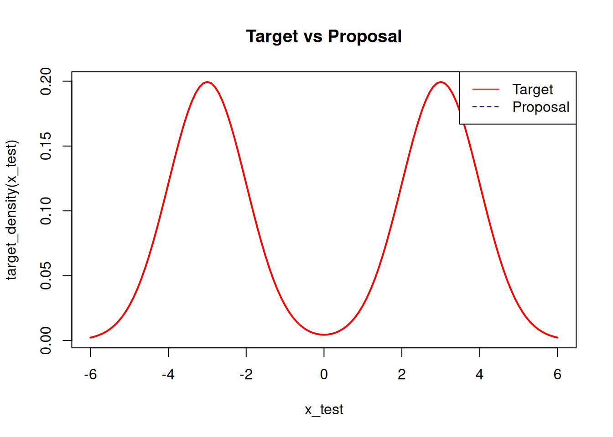
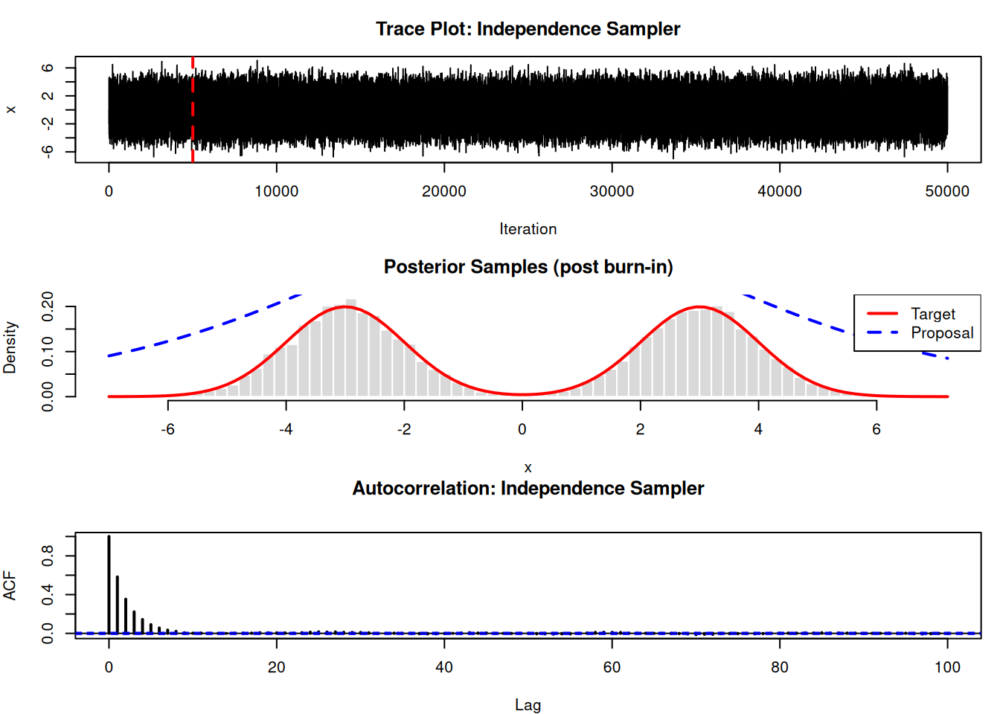

Show plot
plot(1, main="")
In the previous chapter we have given a heuristic introduction to numerical integration. The goal of the present chapter is twofold. On the one hand we will present Markov chain Monte Carlo as a tool to compute multidimensional integrals occurring in data analysis problems or in statistical physics. On the other hand we will use the rules of probability theory to study some of the important properties of MCMC. For proofs and additional material not covered here, we refer the reader to [ \(16,74,84\) ].
The most basic MC idea is the following. Let’s assume we are interested in the evaluation of the integral
\[ \begin{equation*} q:=\int_{0}^{1} g(t) d t, \quad \text { with } 0 \leq g(t) \leq 1 \forall t \in[0,1] \tag{30.1} \end{equation*} \]
We generate points \((t, y)\), where both coordinates are uniform random numbers in the unit interval \((0,1]\) and we count the events \(E\) where points lie below the curve defined by \(g(t)\). The probability for these events \(P(E \mid \mathcal{I})\) is equal to the ratio of the corresponding areas. Since the unit square has size 1 , the ratio is the sought-for integral \(P(E \mid \mathcal{I})=q\). So far, we have just defined a Bernoulli experiment and the probability that \(n\) points of \(N\) lie below the curve is given by the ubiquitous binomial distribution, introduced in Section 4.2 [p. 54]:
\[ P(n \mid N, q, \mathcal{I})=\binom{N}{n} q^{n}(1-q)^{N-n} . \]
In order to infer \(q\), given the experimental value \(n\), we invoke Bayes’ theorem:
\[ p(q \mid n, N, \mathcal{I})=\frac{P(n \mid q, N, \mathcal{I}) p(q \mid N, \mathcal{I})}{Z} . \]
In order to keep the discussion transparent, we assume a beta prior
\[ p(q \mid N, \mathcal{I})=\frac{1}{B(a, b)} q^{a-1}(1-q)^{b-1}, \]
with appropriate values for \(a\) and \(b\) representing mean and variance of \(q\) according to our prior knowledge. An uninformative, uniform prior corresponds to \(a=b=1\). We end up with the beta PDF for the posterior
\[ p(q \mid n, N, \mathcal{I})=p_{\beta}(q \mid \alpha, \rho) ; \quad \text { with } \alpha=a+n, \quad \rho=b+N-n \]
and we characterize the result by
\[ \begin{align*} \langle q\rangle & =\frac{n+a}{N+a+b}, \tag{30.2a}\\ \operatorname{var}(q) & =\frac{\alpha \rho}{(\alpha+\rho)^{2}(\alpha+\rho+1)}, \tag{30.2b}\\ \varepsilon_{\text {rel }}:=\frac{\operatorname{std}(q)}{\langle q\rangle} & =\sqrt{\frac{\rho}{\alpha(\alpha+\rho+1)}} . \tag{30.2c} \end{align*} \]
The last equation defines the relative uncertainty. In order to separate the wood from the trees we use the special case \(q=\frac{1}{2}\), implying \(a=b\). The results for the bare prior, corresponding to \(N=n=0\), read
\[ \begin{equation*} \langle q\rangle^{\text {prior }}=\frac{1}{2} ; \quad \varepsilon_{r e l}^{\text {prior }}=\frac{1}{\sqrt{2 a+1}}, \tag{30.3} \end{equation*} \]
while for the posterior we have
\[ \begin{equation*} \langle q\rangle=\frac{n+a}{N+2 a} ; \quad \varepsilon_{r e l}=\sqrt{\frac{a+N-n}{(a+n)(2 a+N+1)}} . \tag{30.4} \end{equation*} \]
For the symmetric case under consideration the experimental value \(n\) will be close to \(N / 2\). So, we can estimate the relative uncertainty by
\[ \varepsilon_{\text {rel }} \approx \sqrt{\frac{a+N / 2}{(a+N / 2)(2 a+N+1)}}=\frac{1}{\sqrt{2 a+N+1}} . \]
There are two interesting limiting cases. On the one hand, there is the ‘scientific novice’, who has no clue whatsoever about the possible result. His or her prior knowledge is best encoded by a uniform PDF. On the other hand, there is the expert, who is an old hand at science. His or her prior knowledge is adequately described by an expert prior with \(a \gg 1\). The novice prior yields
\[ \begin{align*} \langle q\rangle^{\text {prior }} & =\frac{n+1}{N+2} ; \quad \varepsilon_{r e l}^{\text {prior }}=\frac{1}{\sqrt{3}}, \tag{30.5}\\ \varepsilon_{r e l} & =\sqrt{\frac{N / 2+1}{(N / 2+1)(N+3)}}=\frac{1}{\sqrt{N+3}} . \tag{30.6} \end{align*} \]
The expert prior, in contrast, results in
\[ \begin{aligned} \langle q\rangle & =\frac{n+a}{N+2 a} ; \quad \varepsilon_{\text {rel }}^{\text {prior }} \approx \frac{1}{\sqrt{2 a}}, \\ \varepsilon_{\text {rel }} & =\sqrt{\frac{a+N / 2}{(a+N / 2)(2 a+N)}} \approx \frac{1}{\sqrt{2 a+N}}=\frac{1}{\sqrt{\frac{1}{\left(\varepsilon_{\text {rel }}^{\text {prior }}\right)^{2}}+N}} . \end{aligned} \]
The information gain by the experiment is reflected in the reduced posterior uncertainty. For a sensible reduction in the latter case, we need
\[ N>\frac{1}{\left(\varepsilon_{\text {rel }}^{\text {prior }}\right)^{2}}=2 a \]
Hence, the experienced scientist needs significantly ‘better’ experiments to improve his/her state of knowledge. Moreover, we see that it takes much more data to convince the expert that \(q\) is different from his/her prior knowledge. As long as \(a \gg N\) the mean is still \(\langle q\rangle \approx 1 / 2\), which was the expert’s conjecture.
An alternative approach, commonly used in frequentist statistics, to evaluate the random experiment is to invent an estimator for the sought-for quantity. In the present case one is prompted to use the relative frequency
\[ q^{*}=\frac{n}{N} \]
Since \(n\) is obtained by a Bernoulli experiment, it is binomial and we get
\[ \begin{align*} \left\langle q^{*}\right\rangle & =\frac{\langle n\rangle}{N}=q \tag{30.7a}\\ \operatorname{std}\left(q^{*}\right) & =\frac{\operatorname{std}(n)}{N}=\sqrt{\frac{q(1-q)}{N}} \\ \varepsilon_{\text {rel }} & =\sqrt{\frac{(1-q)}{q N}} \tag{30.7b} \end{align*} \]
For the symmetric case \(q=1 / 2\) the latter simplifies to
\[ \varepsilon_{r e l}=\frac{1}{\sqrt{N}} . \]
Since the frequentist approach disdains prior knowledge, the result has to be compared with that for the novice prior in equation (30.6). In the Bayesian reasoning, based on quadratic costs, one would use the posterior mean \(\langle q\rangle=\frac{n+1}{N+2}\) as estimator. The results are roughly the same. The relative uncertainty is slightly better in the Bayesian case. But the frequentist statistician would discredit the Bayesian estimator for being biased.
At first glance, one might agree with the frequentist point of view, since an estimator that yields on average a wrong result seems useless. However, the Bayesian approach is consistent and free from ambiguities. The seeming contradiction has a subtle origin.
In the frequentist approach one assumes a given data analysis problem, in our case the determination of \(q\) where the parameters are not random in any way but fixed and as yet unknown. In order to decide whether an estimator is biased or not, the random experiment is repeated ad infinitum for the same value of \(q\). To verify experimentally that the estimator is unbiased, one has to repeat the experiment with the same sample size and for one and the same value for the parameter \(q\) over and over again. In doing so, we produce a set of samples \(\left\{n_{1}, n_{2}, \ldots, n_{L}\right\}\) with \(L \rightarrow \infty\). The sample mean of the frequentist estimator is
\[ \left\langle q^{*}\right\rangle=\lim _{L \rightarrow \infty} \frac{1}{L} \sum_{\nu=1}^{L} \frac{n_{\nu}}{N}=q, \]
and therefore unbiased. The same situation would be dealt with in Bayesian logic by computing the posterior PDF \(p\left(q \mid\left\{n_{1}, \ldots, n_{L}\right\}, N, \mathcal{I}\right)\). Again using Bayes’ theorem and the fact that the random variables \(n_{\nu}\) are uncorrelated, we end up with a beta PDF
\[ \begin{aligned} p\left(q \mid\left\{n_{1}, \ldots, n_{L}\right\}, N, \mathcal{I}\right) & =p_{\beta}\left(q \mid \alpha^{\prime}, \rho^{\prime}\right) \\ \text { with } \quad \alpha^{\prime} & =a+\sum_{\nu} n_{\nu}, \quad \rho^{\prime}=b+N L-\sum_{\nu} n_{\nu} . \end{aligned} \]
In the limit \(L \rightarrow \infty\) the data overrule the prior completely and also in the Bayesian approach we end up with the unbiased result \(\langle q\rangle=q\).
But the frequentist way of reasoning is hypothetical and unrealistic. Not all experiments are dedicated to determining one and the same parameter value over and over again. The realistic situation is that we use the same experimental apparatus and the same data analysis tool to analyse different probes with different parameter values. The Bayesian goal, in the case of a quadratic cost function, is to minimize the mean square deviation between estimator and true value, averaged over all parameter values as they occur in nature. Since the Bayesian approach is consistent and the quadratic costs are minimized by the posterior mean, there is no better estimator in this respect. We will illustrate this point guided by the present simple example.
The procedure is as follows. We generate a value \(q\) at random according to a certain prior PDF that encodes the distribution of \(q\) values occurring in nature. For a given value \(q\) and sample size \(N\), we draw a random integer \(n_{q}\) from the binomial probability \(P(n \mid q, N, \mathcal{I})\). Next we determine the estimator \(q^{*}=\frac{n_{q}+c}{N+d}\), with \(c=d=0\) in the frequentist case and \(c=1, d=2\) in the Bayesian case. Finally, the discrepancy with the true value is measured by the quadratic cost function
\[ \Delta^{2}:=\left(q-\frac{n_{q}+c}{N+d}\right)^{2} . \]
We are interested in the mean costs, i.e.
\[ \begin{aligned} \left\langle\Delta^{2}\right\rangle & =\int_{0}^{1} d q p(q) \sum_{n_{q}=0}^{N} P\left(n_{q} \mid q, N, \mathcal{I}\right)\left(q-\frac{n_{q}+c}{N+d}\right)^{2} \\ & =\frac{1}{(N+d)^{2}}\left(\left\langle(\Delta q)^{2}\right\rangle\left(d^{2}-N\right)+N\langle q\rangle(1-\langle q\rangle)+(c-d\langle q\rangle)^{2}\right) . \end{aligned} \]
Particularly for the novice prior \((a=b=1)\) we have
\[ \langle q\rangle=\frac{1}{2}, \quad\left\langle(\Delta q)^{2}\right\rangle=\frac{1}{12} \]
and hence
\[ \left\langle\Delta^{2}\right\rangle=\frac{1}{(N+d)^{2}}\left(\frac{d^{2}}{12}+\frac{N}{6}+\left(c-\frac{d}{2}\right)^{2}\right) . \]
For the frequentist estimator ( \(c=d=0\) ) we get \(\left\langle\Delta^{2}\right\rangle_{0}=\frac{1}{6 N}\), while the mean costs for the Bayesian estimator \(\left\langle\Delta^{2}\right\rangle_{B}=\frac{1}{6(N+2)}\) are slightly smaller, corroborating that the Bayesian estimator is superior over the unbiased one.
Here we will assess the power of simple sampling by a hypothetical application. A scientist, cast away on a lonesome island, for some weird reason desperately needs the number \(\pi\) with relative uncertainty \(10^{-5}\). Since he is familiar with probability theory he decides to determine it through a random counting experiment. He draws a large circle in the sand entirely enclosed by a square. He starts throwing little stones at random in the direction of the square. The size of its edges is defined as of unit length. Ignoring those stones that land outside the unit square, the (conditional) probability that a stone lands inside the circle is given by the area of the circle. So, in principle, the goal is the evaluation of an integral given in equation (30.1) and the manual stochastic evaluation corresponds to simple sampling. The probability for a stone landing inside the circle is
\[ q=\frac{\pi}{4} . \]
Since the prior knowledge is weak compared with the desired accuracy, the likelihood will take the leading part and the relative uncertainty is given by equation (30.7), which for \(N\) random throws yields
\[ \varepsilon_{r e l}=\frac{1}{\sqrt{N}} \underbrace{\sqrt{\frac{4-\pi}{\pi}}}_{\approx 1 / 2} . \]
We infer the sample size \(N\) necessary for the desired accuracy:
\[ N \geq \frac{1}{\left(2 \varepsilon_{r e l}\right)^{2}} \approx 3 \times 10^{9} . \]
How long would it take to reach the accuracy? Let’s assume that throwing a stone along with the necessary bookkeeping takes on average 5 seconds. In total it would take the lonesome scientist roughly 95 years to determine \(\pi\) with the desired accuracy. This utterly simple example illustrates that brute-force Monte Carlo is not very efficient. In this case it might help to use a computer to throw virtual stones but as soon as the problem gets mega-dimensional, high-performance computers are also rapidly in the same situation as the poor scientist. The reason is simple: the relative uncertainty is given by
\[ \varepsilon_{r e l}=\sqrt{\frac{(1-q)}{q N}}, \]
irrespective of the spatial dimension of the problem. The probability \(q\), that is the ratio of volumes, however, depends exponentially ( \(c e^{-\beta d}\) ) on the dimension \(d\), with some positive parameter \(\beta\). Hence \(q\) is exponentially small, resulting in an exponentially increasing
\[ \varepsilon_{r e l}=\frac{e^{\beta d / 2}}{\sqrt{c N}}, \]
resulting in an exponentially increasing sample size for fixed accuracy.
One of the central applications of Monte Carlo techniques is the evaluation of integrals of the form
\[ \langle f\rangle=\int \underbrace{f(x) \rho(x)}_{:=g(x)} d^{L} x:=I, \]
where \(\boldsymbol{x}\) is an \(L\)-dimensional vector and \(d^{L} \boldsymbol{x}\) the corresponding integration measure. We have seen that simple sampling is in general not adequate for such high-dimensional problems, due to the increasing variance. We therefore need some means to reduce the variance. In data analysis or classical statistical physics the integrand \(g(\boldsymbol{x})\) is by definition split into two factors \(f(\boldsymbol{x})\) and \(\rho(\boldsymbol{x})\), where the latter is a probability density function. But even if this is not a priori the case, each function \(g(x)\) can always be split in the aforementioned way. In the context of reweighting, we will look at this aspect more generally.
The key idea of Monte Carlo methods is to generate samples of vectors \(\left\{x^{(1)}, \ldots, x^{(N)}\right\}\) according to the target PDF \(\rho(\boldsymbol{x})\) and to estimate the integral \(I\) by the sample mean
\[ I^{*}:=\frac{1}{N} \sum_{i=1}^{N} f\left(x^{(i)}\right) \]
The standard deviation of the sample mean in the case of uncorrelated events is given by the standard error, outlined above, namely
\[ \operatorname{std}\left(I^{*}\right):=\frac{\sigma_{f}}{\sqrt{N}} ; \quad \sigma_{f}^{2}:=\int(f(x)-\langle f\rangle)^{2} \rho(x) d^{L} x \]
Although the standard error can be viewed as a special application of the central limit theorem, it is also valid for small sample sizes \(N\), as we have seen in Section 19.1.1 [p. 284]. Obviously, it is extremely advantageous if the variation of \(g(x)\) is mainly due to \(\rho(x)\) and \(f(x)\) varies very little in the range of the peaks of \(\rho(x)\), as the latter determines \(\sigma_{f}\). If that is not the case from the outset one can apply the remedy of ‘reweighting’, which is closely related to importance sampling as discussed in Section 29.2.3 [p. 523].
Reweighting: If a positive function \(\tilde{g}(\boldsymbol{x})\) is available, for which the integral \(\int \tilde{g}(\boldsymbol{x}) d^{L} \boldsymbol{x}= Z\) is known analytically, and that ‘closely resembles’ the integrand \(g(x)\) in a sense that will soon become clear, then we can rewrite the integral as
\[ I=\int \underbrace{\frac{Z g(\boldsymbol{x})}{\tilde{g}(\boldsymbol{x})}}_{\tilde{f}(\boldsymbol{x})} \underbrace{\frac{\tilde{g}(\boldsymbol{x})}{Z}}_{:=\tilde{\rho}(\boldsymbol{x})} d^{L} x \]
The central goal of reweighting is achieved if the new PDF, \(\tilde{\rho}(\boldsymbol{x})\), implies a significantly smaller \(\sigma_{\tilde{f}}\). This is not the case if \(\|\tilde{g}(x)\|\) falls off more rapidly than \(\|g(x)\|\) for large \(\|x\|\). Reweighting is also most useful in the case of parameter studies. Let’s assume we are interested in the parameter dependence of an observable
\[ \langle O\rangle_{a}:=\int O(\boldsymbol{x}) \rho(\boldsymbol{x} \mid a) d^{L} x \]
where \(a\) is the parameter under consideration. The expectation value shall be determined by MC means. That is, we generate a sample \(\left\{\boldsymbol{x}^{(1)}, \ldots, \boldsymbol{x}^{(N)}\right\}\) drawn from the PDF \(\rho(\boldsymbol{x} \mid a)\) and compute the sample mean
\[ \bar{O}_{a}:=\frac{1}{N} \sum_{i=1}^{N} O\left(\boldsymbol{x}^{(i)}\right) . \]
In order to study the parameter dependence, we would have to repeat the procedure for all parameter values we are interested in. This can be quite CPU time-consuming and on top of that the parameter dependence is masked by the statistical noise. We can apply the reweighting idea to overcome both problems. To this end we write the expectation value for a parameter value \(a^{\prime}\) as
\[ \langle O\rangle_{a^{\prime}}:=\int \underbrace{O(\boldsymbol{x}) \frac{\rho\left(\boldsymbol{x} \mid a^{\prime}\right)}{\rho(\boldsymbol{x} \mid a)}}_{:=\tilde{O}\left(\boldsymbol{x} \mid a, a^{\prime}\right)} \rho(\boldsymbol{x} \mid a) d^{L} x . \]
This expression implies that we can use the same sample, drawn from the PDF for the parameter value \(a\), to estimate the value for \(a^{\prime}\) by the sample mean
\[ \bar{O}_{a^{\prime}}:=\frac{1}{N} \sum_{i=1}^{N} \tilde{O}\left(\boldsymbol{x}^{(i)} \mid a, a^{\prime}\right) . \]
Reweighting in this context is only applicable if the two PDFs for the parameter values \(a^{\prime}\) and \(a\), respectively, do not differ too much. Otherwise the standard error of \(\bar{O}_{a^{\prime}}\) will be large.
Once the variance has been reduced by a proper splitting of the integrand into probability density \(\tilde{\rho}(\boldsymbol{x})\) and observable \(\tilde{f}(\boldsymbol{x})\), we still need a way to sample from \(\tilde{\rho}(\boldsymbol{x})\). This combination of variance reduction and sampling from the PDF that contains the dominant part of the variation of the integrand is often referred to as importance sampling, as already introduced in the previous chapter. In general it will not be possible to draw an exact and uncorrelated sample from \(\tilde{\rho}(\boldsymbol{x})\), as it will neither have a tensor structure nor be akin to a Gaussian. The most widely used approach for this endeavour is Markov chain Monte Carlo. MCMC has been discussed in many review articles and books. At first glance, the MCMC algorithm seems embarrassingly trivial and for simple problems it works strikingly well. However, when it comes to real-world problems, it is essential to know the possible pitfalls. In order to reveal them we will analyse MCMC following the rules of probability theory.
For concreteness we describe the MCMC method in terms of the Metropolis-Hastings algorithm. Other algorithms can be found in [16, 74, 84]. We restrict the discussion to problems with discrete states \(\mathcal{I}=\left\{\boldsymbol{\xi}_{1}, \boldsymbol{\xi}_{2}, \ldots, \boldsymbol{\xi}_{\mathcal{N}}\right\}\). Continuous problems can always be cast into a discrete version by suitable discretization. A sample shall be drawn from the probability mass function (PMF) \(\rho_{j}:=\rho\left(\boldsymbol{\xi}_{j}\right)\). Initially for discrete time \(\tau=0\) a state is generated according to some initial PMF \(p_{j}^{0}\), which could even be a Kronecker delta \(\delta_{j, j_{0}}\), if the Markov processes always start out from one and the same state \(\boldsymbol{\xi}_{j_{0}}\). At some later time \(\tau \geq 0\) the Markov chain contains already the elements \(\left\{x_{0}, \ldots, x_{\tau}\right\}\). The next element of the Markov chain, i.e. \(\boldsymbol{x}_{\tau+1}\), is generated according to the following recipe.
\[ \begin{equation*} \alpha\left(x_{p}, x_{\tau}\right)=\min \left(1, \frac{P\left(x_{p}\right) q\left(x_{\tau} \mid x_{p}\right)}{P\left(x_{\tau}\right) q\left(x_{p} \mid x_{\tau}\right)}\right) . \tag{30.8} \end{equation*} \]
The \(q\)-dependent terms are due to Hastings and allow for asymmetric proposal distributions, i.e. in case \(q\left(\boldsymbol{\xi}_{i} \mid \boldsymbol{\xi}_{j}\right) \neq q\left(\boldsymbol{\xi}_{j} \mid \boldsymbol{\xi}_{i}\right)\).
\[ \boldsymbol{x}_{\tau+1}= \begin{cases}\boldsymbol{x}_{p} & \text { if the proposal is accepted } \tag{30.9}\\ \boldsymbol{x}_{\tau} & \text { if the proposal is rejected. }\end{cases} \]
The recipe presented in the previous section defines a special Markov process and serves as a concrete example. Most of the following discussion, however, will be valid generally. Restrictions on the Metropolis-Hastings algorithm will be pointed out explicitly. The Markov chain is governed by a Markov matrix \(\mathbf{M}\), with components
\[ \begin{equation*} M_{j i}:=P\left(x_{\tau+1}=\xi_{j} \mid x_{\tau}=\xi_{i}, \mathcal{I}\right) \tag{30.10} \end{equation*} \]
which is homogeneous (i.e. independent of ‘time’ \(\tau\) ). The background information \(\mathcal{I}\) contains the details of the Markov process, for example whether Metropolis-Hastings, Glauber [84] or any other dynamics is used and which proposal distribution is employed. Since the Markov matrix corresponds to a conditional probability, it fulfils the normalization rule
\[ \begin{equation*} \sum_{j=1}^{\mathcal{N}} M_{j i}=1 . \tag{30.11} \end{equation*} \]
We will show in the sequel that the Markov process converges under some general conditions towards a unique invariant distribution, which satisfies the equation
\[ \begin{equation*} \sum_{i=1}^{\mathcal{N}} M_{j i} \rho_{i}=\rho_{j} \tag{30.12} \end{equation*} \]
The crucial question, however, remains of how to construct a Markov matrix \(\mathbf{M}\) that has a predefined invariant distribution \(\boldsymbol{\rho}^{0}\). A sufficient but not necessary condition to this end is the detailed balance relation
\[ \begin{equation*} M_{i j} \rho_{j}^{0}=M_{j i} \rho_{i}^{0} \tag{30.13} \end{equation*} \]
Here \(\rho^{0}\) is the desired PMF for which we want to generate a sample by MCMC means. Summing both sides of the detailed balance condition over index \(j\), along with the normalization equation (30.11) yields
\[ \sum_{j=1}^{\mathcal{N}} M_{i j} \rho_{j}^{0}=\rho_{i}^{0}, \]
showing that \(\boldsymbol{\rho}^{\mathbf{0}}\) is indeed an invariant distribution of the Markov matrix. We still have to prove that there is only one invariant distribution and that the Markov process converges towards it. In general, it is straightforward to decide whether the detailed balance condition is fulfilled. In particular, the Metropolis-Hastings algorithm, outlined in the previous section, satisfies the detailed balance. According to the recipe, we decompose the Markov matrix element \(M_{j i}\), which is the probability of moving in one time step from state \(\boldsymbol{\xi}_{i}\) to \(\boldsymbol{\xi}_{j}\), into the proposal probability \(\boldsymbol{q}\left(\boldsymbol{\xi}_{k} \mid \boldsymbol{\xi}_{i}\right)\) to offer a state \(\boldsymbol{\xi}_{k}\) starting from state \(\boldsymbol{\xi}_{i}\) and the acceptance probability \(\alpha\left(\boldsymbol{\xi}_{k} \mid \boldsymbol{\xi}_{i}\right)\) to accept state \(\boldsymbol{\xi}_{k}\) coming from state \(\boldsymbol{\xi}_{i}\). These elements can be introduced by the marginalization rule
\[ \begin{align*} M_{j i} & =P\left(x_{\tau+1}=\xi_{j} \mid x_{\tau}=\xi_{i}, \mathcal{I}\right) \tag{30.14}\\ & =\sum_{k=1}^{\mathcal{N}} P\left(x_{\tau+1}=\xi_{j} \mid x_{p}=\xi_{k}, x_{\tau}=\xi_{i}, \mathcal{I}\right) P\left(x_{p}=\xi_{k} \mid \hat{x}_{\tau}=\xi_{i}, \mathcal{I}\right) \\ & =\sum_{k=1}^{\mathcal{N}} P\left(\hat{x}_{\tau+1}=\xi_{j} \mid x_{p}=\xi_{k}, \hat{x}_{\tau}=\xi_{i}, \mathcal{I}\right) q\left(\xi_{k} \mid \xi_{i}\right) \end{align*} \]
According to the rules underlying the Markov process, the first factor represents the acceptance probability. To begin with, we consider the case \(\xi_{j} \neq \xi_{i}\). In this situation, the proposed state \(\boldsymbol{\xi}_{k}\) has to be equal to \(\boldsymbol{\xi}_{j}\) and it has to be accepted, i.e. \(\boldsymbol{P}\left(\hat{x}_{\tau+1}=\boldsymbol{\xi}_{j} \mid \boldsymbol{x}_{p}=\right. \left.\xi_{k}, \hat{x}_{\tau}=\xi_{i}, \mathcal{I}\right)=\delta_{k j} \alpha\left(\xi_{j} \mid \xi_{i}\right)\). This results in
\[ \begin{equation*} M_{j i}=q\left(\xi_{j} \mid \xi_{i}\right) \alpha\left(\xi_{j} \mid \xi_{i}\right) \quad \text { for } j \neq i . \tag{30.15} \end{equation*} \]
The diagonal element follows readily from the normalization equation (30.11):
\[ \begin{equation*} M_{i i}=1-\sum_{k \neq i} q\left(\xi_{k} \mid \xi_{i}\right) \alpha\left(\xi_{k} \mid \xi_{i}\right) . \tag{30.16} \end{equation*} \]
So, the final result is
\[ \begin{equation*} M_{j i}=q\left(\xi_{j} \mid \xi_{i}\right) \alpha\left(\xi_{j} \mid \xi_{i}\right)+\delta_{i j}\left(1-\sum_{k} q\left(\xi_{k} \mid \xi_{i}\right) \alpha\left(\xi_{k} \mid \xi_{i}\right)\right) . \tag{30.17} \end{equation*} \]
So far the result is valid for arbitrary acceptance probability. Next we will tailor the acceptance probability such that it yields the desired PDF \(\rho^{0}\). For \(i \neq j\) the detailed balance condition shall read
\[ q\left(\boldsymbol{\xi}_{j} \mid \boldsymbol{\xi}_{i}\right) \alpha\left(\boldsymbol{\xi}_{j} \mid \boldsymbol{\xi}_{i}\right) \rho_{i}^{0}=q\left(\boldsymbol{\xi}_{i} \mid \boldsymbol{\xi}_{j}\right) \alpha\left(\boldsymbol{\xi}_{i} \mid \boldsymbol{\xi}_{j}\right) \rho_{j}^{0}, \]
or rather
\[ \frac{\alpha\left(\xi_{j} \mid \xi_{i}\right)}{\alpha\left(\xi_{i} \mid \xi_{j}\right)}=\frac{q\left(\xi_{i} \mid \xi_{j}\right) \rho_{j}^{0}}{q\left(\xi_{j} \mid \xi_{i}\right) \rho_{i}^{0}} . \]
Apparently, one choice for the acceptance probability that yields the correct PDF is given by equation (30.8). The detailed balance condition can easily be confused with the product rule of probability theory. In a more thorough notation, the detailed balance condition should rather be written
\[ P\left(x_{\tau+1}=\xi_{j} \mid x_{\tau}=\xi_{i}, \mathcal{I}\right) P\left(x_{\tau}=\xi_{i} \mid \mathcal{I}^{\prime}\right)=P\left(x_{\tau+1}=\xi_{i} \mid x_{\tau}=\xi_{j}, \mathcal{I}\right) P\left(x_{\tau}=\xi_{j} \mid \mathcal{I}^{\prime}\right) . \]
The subtle but crucial difference from the product rule is the difference in the background information \(\mathcal{I}\) and \(\mathcal{I}^{\prime}\). The former contains the details of the Markov process and the latter defines which scientific problem we are interested in, or rather which PMF we are aiming at. \(\mathcal{I}\) and \(\mathcal{I}^{\prime}\) are completely independent. This stresses again the utter importance of the background information.
The eigenvalue problem of the Markov matrix is of crucial importance for the detailed understanding of the performance of MCMC. Here we present a slightly different approach from that usually found in the literature, e.g. [74], which is more appropriate for our purposes and examines the MCMC properties from a different perspective. The Markov matrix is not symmetric, and right and left eigenvectors will be different. We start out from the right eigenvalue problem
\[ \begin{equation*} \mathbf{M} \boldsymbol{x}_{v}=\lambda_{v} \boldsymbol{x}_{v} \tag{30.18} \end{equation*} \]
The normalization of the Markov matrix (30.11) has important consequences. Firstly, there is always one eigenvalue \(\lambda_{1}=1\). The corresponding right eigenvector is, according to the definition in equation (30.12), given by the PMF \(\rho\), i.e. \(X_{i 1}=\rho\left(\xi_{i}\right)\). A second consequence of the normalization ensues from the summation of the eigenvalue equation
\[ \begin{aligned} \sum_{i=1}^{\mathcal{N}} \underbrace{\sum_{j=1}^{\mathcal{N}} M_{j i}}_{=1} X_{i \nu} & =\lambda_{\nu} \sum_{j=1}^{\mathcal{N}} X_{j \nu} \\ \left(\sum_{i=1}^{\mathcal{N}} X_{i \nu}\right) & =\lambda_{\nu}\left(\sum_{i=1}^{\mathcal{N}} X_{i \nu}\right) . \end{aligned} \]
This implies
\[ \begin{equation*} \sum_{i=1}^{\mathcal{N}} X_{i \nu} \neq 0 \Rightarrow \lambda_{\nu}=1 . \tag{30.19} \end{equation*} \]
Next we switch to the more compact matrix notation and introduce the diagonal matrix
\[ \boldsymbol{\Delta}=\operatorname{diag}\left\{\rho_{1}^{1 / 2}, \rho_{2}^{1 / 2}, \ldots, \rho_{\mathcal{N}}^{1 / 2}\right\} . \]
Based on the detailed balance equation in matrix form \(\mathbf{\Delta}^{2} \mathbf{M}^{T}=\mathbf{M} \mathbf{\Delta}^{2}\), we modify \(\mathbf{M}\) to obtain a real symmetric matrix:
\[ \begin{equation*} \mathbf{A}:=\mathbf{A}^{-1} \mathbf{M} \mathbf{\Delta}=\mathbf{\Delta} \mathbf{M}^{T} \mathbf{\Delta}^{-1}=\mathbf{A}^{T} . \tag{30.20} \end{equation*} \]
Consequently, the Markov matrix \(\mathbf{M}\) has real eigenvalues, since it has the same eigenvalues as the real symmetric matrix \(\mathbf{A}\). Starting from the eigenvalue equation AU \(=\mathbf{U D}\), with \(\mathbf{D}\) being the diagonal matrix of eigenvalues, and using equation (30.20) we get
\[ \begin{align*} \mathbf{A U} & =\mathbf{A}^{-1} \mathbf{M} \mathbf{\Delta U}=\mathbf{U D}, \\ \mathbf{M}(\mathbf{\Delta U}) & =\underbrace{(\mathbf{\Delta U})}_{:=\mathbf{X}} \mathbf{D}, \\ \mathbf{M} & =\mathbf{X D X}^{-1} . \tag{30.21} \end{align*} \]
Obviously, the eigenvalues are the same and the corresponding matrix \(\mathbf{X}\) of right eigenvectors of \(\mathbf{M}\) is related to the orthonormal matrix \(\mathbf{U}\) of eigenvectors of \(\mathbf{A}\) through
\[ \begin{equation*} \mathbf{X}=\mathbf{\Delta} \mathbf{U} . \tag{30.22} \end{equation*} \]
As mentioned before, an eigenvector to \(\lambda=1\) is \(X_{i 1}=\rho_{i}\). Hence the corresponding vector \(U_{i 1}\) is given by
\[ U_{i 1}=\rho_{i}^{1 / 2}, \]
which has the normalization ( \(\sum_{i} U_{i 1}^{2}=1\) ) in agreement with the fact that it is a column of an orthonormal matrix. Since \(\mathbf{A}\) is real symmetric, the eigenvalues are real. Now we can exploit the third consequence of the normalization of the Markov matrix. To this end we recall Gershgorin’s theorem [126]. For a square matrix with a real-valued spectrum, along with the fact that \(M_{j i}\) is a probability, i.e. \(M_{j i} \geq 0\) and \(\sum_{j} M_{j i}=1\), it yields that all eigenvalues lie in the following union of intervals:
\[ \lambda_{\nu} \in \bigcup_{i}\left[M_{i i}-\sum_{j \neq i} M_{j i}, M_{i i}+\sum_{j \neq i} M_{j i}\right]=\bigcup_{i}\left[2 M_{i i}-1,1\right] . \]
Hence, all eigenvalues are restricted to the interval \([-1,1]\). The eigenvectors \(\mathbf{X}\) of \(\mathbf{M}\) do not form an orthogonal set of vectors. Instead we have, according to equation (30.22), the relation
\[ \begin{align*} \mathbf{1} & =\mathbf{U}^{\dagger} \mathbf{U}=\mathbf{X}^{\dagger} \mathbf{\Delta}^{-2} \boldsymbol{X}, \tag{30.23a}\\ \delta_{\nu, \nu^{\prime}} & =\sum_{i} \frac{1}{\rho_{i}} X_{i \nu}^{*} X_{i \nu^{\prime}} . \tag{30.23b} \end{align*} \]
Along with \(X_{i 1}=\rho_{i}\) we find for \(\nu^{\prime}=1\) :
\[ \begin{align*} & \sum_{i} X_{i 1}=1 \tag{30.23c}\\ & \sum_{i} X_{i v}=0 ; \quad \forall v>1 . \tag{30.23d} \end{align*} \]
Here \(\mathbf{X}^{\dagger}\) stands for the adjoint, or rather the conjugate transpose of matrix \(\mathbf{X}\). If \(\lambda=1\) is degenerate, the other degenerate eigenvectors also have the property in equation (30.23d). From equation (30.23a) we readily obtain the inverse of \(\mathbf{X}\) :
\[ \mathbf{X}^{-1}=\mathbf{X}^{\dagger} \mathbf{A}^{-2} \]
and we modify the spectral representation in equation (30.21):
\[ \begin{equation*} \mathbf{M}=\mathbf{X D X}^{\dagger} \mathbf{\Delta}^{-2} \tag{30.24} \end{equation*} \]
From the orthonormality of \(\mathbf{U}\) we can derive a further property of \(\mathbf{X}\), which is related to the completeness relation of the eigenvectors:
\[ \begin{align*} \mathbf{1} & =\mathbf{U} \mathbf{U}^{\dagger}=\mathbf{\Delta}^{-1} \mathbf{X X}^{\dagger} \mathbf{\Delta}^{-1} \Rightarrow \tag{30.25}\\ \mathbf{X X}^{\dagger} & =\mathbf{\Delta}^{2} \\ \sum_{l} X_{i l} X_{j l}^{*} & =\delta_{i j} \rho_{i} \tag{30.26} \end{align*} \]
We introduce a modified representation of the spectral representation in equation (30.21) that will be useful in the sequel:
\[ \begin{align*} \left(\mathbf{M}^{\tau}\right)_{i j} & =\sum_{l=1}^{\mathcal{N}} X_{i l} \lambda_{l}^{\tau} \frac{X_{j l}^{*}}{\rho_{j}}=\rho_{i}+\left(\mathbf{M}^{\prime \tau}\right)_{i j} \tag{30.27}\\ \text { with } \quad\left(\mathbf{M}^{\prime \tau}\right)_{i j} & :=\sum_{l=2}^{\mathcal{N}} X_{i l} \lambda_{l}^{\tau} \frac{X_{j l}^{*}}{\rho_{j}} . \tag{30.28} \end{align*} \]
We can use these results to determine the probability of finding the walker at time \(\tau\) in state \(\boldsymbol{\xi}_{j}\). Along with the marginalization over the initial state \(\boldsymbol{x}_{0}\), we derive
\[ \begin{align*} \rho_{j}^{(\tau)}:= & P\left(\boldsymbol{x}_{\tau}=\boldsymbol{\xi}_{j} \mid p^{0}, \mathcal{I}\right)=\sum_{i}^{\mathcal{N}} P\left(\boldsymbol{x}_{\tau}=\boldsymbol{\xi}_{j} \mid \boldsymbol{x}_{0}=\boldsymbol{\xi}_{i}, \mathcal{I}\right) \underbrace{P\left(\boldsymbol{x}_{0}=\boldsymbol{\xi}_{i} \mid p^{0}, \mathcal{I}\right)}_{p_{i}^{0}}, \\ \rho_{j}^{(\tau)} & =\sum_{i}^{\mathcal{N}}\left(\mathbf{M}^{\tau}\right)_{j i} p_{i}^{0}=\rho_{j}+\sum_{l=2}^{\mathcal{N}} X_{j l} \lambda_{l}^{\tau} \tilde{p}_{l}^{0} . \tag{30.29} \end{align*} \]
We have introduced a new quantity
\[ \begin{equation*} \tilde{p}_{l}^{0}:=\sum_{i=1}^{\mathcal{N}}\left(\mathbf{X}^{-1}\right)_{l i} p_{i}^{0}=\sum_{i=1}^{\mathcal{N}} X_{i l}^{*} \frac{p_{i}^{0}}{\rho_{i}}, \tag{30.30} \end{equation*} \]
which is the overlap of the initial PMF \(p^{0}\) with the left eigenvectors corresponding to the eigenvalue \(\lambda_{l}\). For \(l=1\) it has the important property
\[ \begin{equation*} \tilde{p}_{1}^{0}=\sum_{j=1}^{\mathcal{N}} \frac{p_{j}^{0}}{\rho_{j}} \rho_{j}=1 . \tag{30.31} \end{equation*} \]
Just as a consistency test, we consider \(p_{i}^{0}=\rho_{i}\) in equation (30.30):
\[ \forall l>1: \quad \tilde{p}_{l}^{0}=\sum_{i=1}^{\mathcal{N}} X_{i l}^{*} \stackrel{(30.23 \mathrm{~d})}{=} 0 \]
and \(P\left(\boldsymbol{x}_{\tau}=\boldsymbol{\xi}_{j} \mid p^{0}, \mathcal{I}\right) \equiv \rho_{i}\), irrespective of \(\tau\). Equation (30.29) is nothing but the power method, which is known to converge towards the dominant eigenvector, provided it is not degenerate. Without degeneracy, the contribution of the various eigenvectors dies out exponentially, governed by \(\lambda_{l}\). Therefore, the convergence is dominated by the second largest eigenvalue \(\lambda_{2}\). We can give a rough estimate of the order of magnitude of the sample size, or rather the number of Monte Carlo steps \(\tau\), required to reduce the dominant contribution below a threshold \(\varepsilon^{*}\) by
\[ \begin{equation*} \tau^{*}=\frac{\ln \left(\varepsilon^{*}\right)}{\ln \left(\lambda_{2}\right)} . \tag{30.32} \end{equation*} \]
It guarantees that \(\lambda_{l}^{\tau}<\varepsilon^{*}, \forall l>1\) and for all \(\tau>\tau^{*}\). Figure 30.1 illustrates the convergence of the Markov process towards the invariant distribution in the case of a Gaussian target PMF. Within each of the panels \(\left(\mathrm{a}_{1}\right)-\left(\mathrm{a}_{3}\right)\) snapshots \(\rho^{(\tau)}\) for various ratios \(\frac{\tau}{\tau^{*}}\) are represented. Here \(\tau^{*}\) is determined such that an accuracy \(\varepsilon^{*}=10^{-3}\) is reached. The panels display results for different initial distribution \(p^{0}\), which are ( \(a_{1}\) ) a delta peak at the centre of the target distribution, ( \(\mathrm{a}_{2}\) ) a uniform distribution and ( \(\mathrm{a}_{3}\) ) another delta peak, this time located outside the target distribution at the far right of the figure. At time \(\tau / \tau^{*}=1\) all
plot(1, main="")
Figure \(30.1\left(\mathrm{a}_{1}\right)-\left(\mathrm{a}_{3}\right)\) Convergence of the distributions \(\rho^{(\tau)}\) towards the Gaussian target PMF \(\rho\) (dashed line) for different initial distributions: (a1) \(p_{i}^{0}=\delta_{i, i_{0}}\), (a2) \(p_{i}^{0}=1 / \mathcal{N}\), (a3) \(p_{i}^{0}=\delta_{i, N}\). The results for three different times \(\frac{\tau}{\tau^{*}}=\{0.01,0.1,1.0\}\) are marked by \(\{*, \triangleleft, \circ\}\). (b) The \(L_{1}\) distance between the target PMF and \(\rho^{(\tau)}\) is plotted versus \(\frac{\tau}{\tau^{*}}\). In all cases \(\mathcal{N}=200\) and \(\tau^{*}=9811\).
distributions are indistinguishable from the target PMF in the plots. In Figure 30.1(b) the distance \(\left\|\rho^{(\tau)}-\rho\right\|_{1}\) to the target distribution is depicted. Initially, the uniform PMF has the smallest distance to the target distribution, while the two delta peaks have almost the same distance, irrespective of the initial location. For long times, only the second dominant eigenvalue survives and determines the convergence rate (slope of the logarithm of the distance versus time), which is therefore the same in all three cases. Initially, however, the convergence rate is fastest for the Markov process that starts at the centre of the target PMF and this chain shows the best convergence. Next comes the flat PMF and the poorest is the Markov process started far away from the centre of the Gaussian. The behaviour can be understood by the simple random walk necessary to bring the walker to the important region of the target PMF.
We have pointed out that the Markov process generates distributions corresponding to the power method for the Markov matrix. The latter has eigenvalues in the interval [ \(-1,1\) ]. The power method generally projects into the subspace spanned by the eigenvectors corresponding to the dominant eigenvalues, which are +1 and maybe -1 . The goal of MCMC is, however, to generate samples according to a target distribution that corresponds to one particular eigenvector of the Markov matrix with eigenvalue 1 . This goal can only be achieved if we can ensure that the largest eigenvalue ( \(\lambda_{1}=1\) ) is not degenerate on the one hand, and that the other dominant eigenvalue \((\lambda=-1)\) can be eliminated on the other hand. Firstly, we will show that the degeneracy of \(\lambda=1\) implies that the Markov process is not ergodic. In other words, there are two or more subspaces of the state-space and the Markov chain always stays in the subspace it started in.
In order to prove this statement, we assume that the largest eigenvalue is degenerate. In this case and in view of the above there exists an eigenvector \(\boldsymbol{x}\) obeying the following equations:
\[ \begin{align*} \mathbf{M} \boldsymbol{x} & =\boldsymbol{x}, \tag{30.33a}\\ \sum_{i} x_{i} & =0 . \tag{30.33b} \end{align*} \]
The latter equation implies that we can decompose the entire index set \(\mathcal{J}:=\{1, \ldots, \mathcal{N}\}\) into disjoint subsets \(\mathcal{J}=\mathcal{J}_{+} \cup \mathcal{J}_{-} \cup \mathcal{J}_{0}\), defined as
\[ \begin{aligned} \mathcal{J}_{+} & :=\left\{i \mid x_{i}>0\right\}, \\ \mathcal{J}_{-} & :=\left\{i \mid x_{i}<0\right\}, \\ \mathcal{J}_{0} & :=\left\{i \mid x_{i}=0\right\} . \end{aligned} \]
In order to fulfil equation (30.33b) the set \(\mathcal{J}_{0}\) may be empty, but not so the other two sets, because otherwise the eigenvector would be the null vector. We split equation (30.33a) into
\[ \begin{equation*} \sum_{j} M_{i j} x_{j}=\sum_{j \in \mathcal{J}_{+}} M_{i j} \underbrace{x_{j}}_{>0}+\sum_{j \in \mathcal{J}_{-}} M_{i j} \underbrace{x_{j}}_{<0}=\underbrace{\sum_{j \in \mathcal{J}_{+}} M_{i j}\left|x_{j}\right|}_{:=m_{i}^{+}}-\underbrace{\sum_{j \in \mathcal{J}_{-}} M_{i j}\left|x_{j}\right|}_{:=m_{i}^{-}} . \tag{30.34} \end{equation*} \]
By construction, \(m_{i}^{ \pm} \geq 0\). If there is an index \(i\) for which ( \(m_{i}^{+}>0 \wedge m_{i}^{-}>0\) ) holds, that implies
\[ \left|\sum_{j} M_{i j} x_{j}\right|<\left|m_{i}^{+}\right|+\left|m_{i}^{-}\right|=\sum_{j \in \mathcal{J}_{+}} M_{i j}\left|x_{j}\right|+\sum_{j \in \mathcal{J}_{-}} M_{i j}\left|x_{j}\right|=\sum_{j} M_{i j}\left|x_{j}\right| . \]
Otherwise, if ( \(m_{i}^{+}=0 \vee m_{i}^{-}=0\) ) then
\[ \left|\sum_{j} M_{i j} x_{j}\right|=\left|m_{i}^{+}\right|+\left|m_{i}^{-}\right|=\sum_{j \in \mathcal{J}_{+}} M_{i j}\left|x_{j}\right|+\sum_{j \in \mathcal{J}_{-}} M_{i j}\left|x_{j}\right|=\sum_{j} M_{i j}\left|x_{j}\right| . \]
Hence, if we sum over all indices \(i\) and if among these there is at least one index with \(\left(m_{i}^{+}>0 \wedge m_{i}^{-}>0\right)\), then we obtain
\[ \sum_{i}\left|\sum_{j} M_{i j} x_{j}\right|<\sum_{j}\left|x_{j}\right| . \]
This stands in contradiction to equation (30.33a), which claims
\[ \sum_{i}\left|\sum_{j} M_{i j} x_{j}\right|=\sum_{i}\left|x_{i}\right| . \]
Hence, assuming degeneracy for \(\lambda=1\), there cannot be an index \(i\) for which both contributions \(m_{i}^{ \pm}\)are nonzero. This implies for equation (30.33a), which can be modified according to equation (30.34):
\[ x_{i}=\sum_{j} M_{i j} x_{j}=m_{i}^{+}-m_{i}^{-}, \]
that
\[ \begin{array}{lll} \text { if } m_{i}^{+}>0 \Rightarrow & i \in \mathcal{J}_{+} & \wedge \\ \text { if } m_{i}^{-}>0 \Rightarrow & i \in \mathcal{J}_{-} & \wedge \tag{30.35b}\\ & x_{i}=m_{i}^{+}=\sum_{j \in \mathcal{J}_{+}} M_{i j} x_{j}, \\ & & x_{i}^{-}=\sum_{j \in \mathcal{J}_{-}} M_{i j} x_{j} . \end{array} \]
We conclude that the two index sets \(\mathcal{J}_{ \pm}\)are decoupled if the stochastic matrix has a degenerate eigenvalue \(\lambda=1\). Hence the indices of the three subsets never mix. In other words, if we start with a configuration belonging to an index in \(\mathcal{J}_{+}\), we can never reach a configuration belonging to indices in \(\mathcal{J}_{-}\). Degeneracy of the largest eigenvalue can therefore be ruled out if the Markov process is ergodic, that is if each configuration can be reached from any other configuration by the Markov process in a finite number of time steps. For nonergodic processes the set of states divides into subsets. The elements of a Markov chain all belong to only one of these subsets. Accordingly, there are as many eigenvalues \(\lambda=1\) as there are disjoint subsets.
\[ \text { A second dominant eigenvalue } \lambda=-1 \]
We still need to get rid of a possible second dominant eigenvalue, namely \(\lambda=-1\). If \(\lambda=-1\) can be ruled out, which is the case in so-called aperiodic Markov chains, one can prove as in the power method that
\[ \begin{equation*} \lim _{\tau \rightarrow \infty}\left(\mathbf{M}^{\tau}\right)_{i j}=\rho_{i} . \tag{30.36} \end{equation*} \]
We will first elucidate the features associated with \(\lambda=-1\), guided by a very simple example. Let the PMF of interest be uniform, \(\rho_{i}=1 / \mathcal{N}\) on the index set \(i \in \mathcal{J}\). For the proposal distribution we use a symmetric nearest-neighbour random walk with periodic boundary condition (pbc), that is
\[ \begin{aligned} P(j \mid i) & =\frac{1}{2}\left(\delta_{j,[i-1]_{\mathcal{N}}}+\delta_{j,[i+1]_{\mathcal{N}}}\right) \\ {[i]_{\mathcal{N}} } & :=\bmod (i-1, \mathcal{N})+1 \end{aligned} \]
The square bracket function ensures pbc. Put differently, the random walk describes nearestneighbour moves on a ring with \(\mathcal{N}\) sites. The Markov matrix, resulting from the MetropolisHastings algorithm, is simply
\[ \mathbf{M}=\frac{1}{2} \overbrace{\left(\begin{array}{cccccc} 0 & 1 & & & & 1 \\ 1 & 0 & 1 & & & \\ & 1 & 0 & \ddots & & \\ & & \ddots & \ddots & 1 & \\ & & & 1 & 0 & 1 \\ 1 & & & & 1 & 0 \end{array}\right)}^{\mathcal{N}} \]
which is ergodic but periodic. The eigenvalues are given by
\[ \lambda_{l}=\cos \left(k_{l}\right), \quad k_{l}:=\frac{2 \pi(l-1)}{\mathcal{N}}, \quad \text { for } l \in \mathcal{J} . \]
The eigenvalue \(\lambda=1\) corresponds to \(n=0\). The eigenvalue \(\lambda=-1\) exists if \(\mathcal{N}\) is even and corresponds to \(l=\mathcal{N} / 2+1\). In the periodic case, \(\rho^{(\tau)}\) switches back and forth between two distributions in the limit \(\tau \rightarrow \infty\). In terms of the random walk the reason behind the alternation is the following. A walker starting at a site with an even index \(i\) will always be at an even site in an even number of steps, provided \(\mathcal{N}\) is even. This is not the case for odd \(\mathcal{N}\), due to hopping processes across the boundary. In general, the existence of an eigenvalue \(\lambda=-1\) can easily be checked based on the matrix \(\mathbf{M}^{2}\), which describes a Markov process that proceeds in double steps. Both matrices \(\mathbf{M}\) and \(\mathbf{M}^{2}\) have the same set of eigenvectors and the eigenvalues of \(\mathbf{M}^{2}\) are given by \(\lambda_{i}^{2}\). Hence, the spectrum of \(\mathbf{M}^{2}\) lies in the interval \([0,1]\). In order to check the existence of \(\lambda=-1\) for \(\mathbf{M}\), we merely have to test for degeneracy of \(\lambda=1\) for \(\mathbf{M}^{2}\). From what we have worked out so far, \(\lambda=-1\) can be ruled out if \(\mathbf{M}^{2}\) is ergodic. In general, the ergodicity of the single and double-step Markov process can be tested easily.
In order to illustrate this aspect we consider again the random walk process with periodic boundary conditions for an even number of sites. The probability \(\left(M^{2}\right)_{j i}\) is only nonzero if \(i=j\) or if \(|j-i|=2\). In other words, if the walker starts at a site with an even index, he can never reach a site with an odd index and vice versa. Hence, \(\mathbf{M}^{2}\) is not ergodic, corroborating the existence of an eigenvalue \(\lambda=-1\) and of a periodic behaviour.
In general, the eigenvalue \(\lambda=-1\) can be removed easily by a spectral shift combined with a rescaling \({ }^{1}\) of the Markov matrix:
\[ M_{j i} \rightarrow \tilde{M}_{j i}:=\left(M_{j i}+a \delta_{j i}\right) /(1+a) \]
[^10]The corresponding eigenvalues in the present example are
\[ \begin{equation*} \lambda_{l}:=\lambda\left(k_{l}\right):=\left(\cos \left(k_{l}\right)+a\right) /(1+a) . \tag{30.37} \end{equation*} \]
Now the even/odd sites are no longer correlated to an even/odd number of steps. This Markov matrix is obtained in the Metropolis-Hastings scheme if the proposed distribution is
\[ \begin{equation*} q(j \mid i)=\left(\frac{1}{2}\left[\delta_{j,[i+1]_{\mathcal{N}}}+\delta_{j,[i-1]_{\mathcal{N}}}\right]+a \delta_{i j}\right) /(1+a) . \tag{30.38} \end{equation*} \]
Now the Markov process is ergodic and aperiodic, that is the dominant eigenvalue \(\lambda=1\) is not degenerate and the Markov process converges in the long run towards the desired (uniform) distribution.
However, the gap between the dominant eigenvalue and the next one is very small if \(\mathcal{N} \gg 1\), namely
\[ \Delta \lambda:=1-\lambda_{2}=1-\left(\cos \left(\frac{2 \pi}{\mathcal{N}}\right)+a\right) /(1+a)=O\left(\frac{1}{\mathcal{N}^{2}}\right) . \]
As we will see in the next sections, a small gap causes severe slowing down of the MCMC process. A more interesting and realistic Markov process for test purposes is given by the Ehrenfest model [114], also known as the dog-flea problem, which was invented to study the fundamental properties of thermodynamics. The model has been analysed in great detail in the context of Markov processes in [4, 18]. For a wider-ranging discussion on the general behaviour of Markov chains, we refer the reader to [67, 74, 218].
The generation of a sample is in itself seldom of central interest. Rather, it is the expectation value
\[ \begin{equation*} \langle f\rangle=\sum_{i=1}^{\mathcal{N}} \underbrace{f\left(\xi_{i}\right)}_{:=f_{i}} \underbrace{\rho\left(\xi_{i}\right)}_{:=\rho_{i}}=\sum_{i=1}^{\mathcal{N}} f_{i} \rho_{i}, \tag{30.39} \end{equation*} \]
of some function \(f(\boldsymbol{x})\) for a given PMF \(\rho(\boldsymbol{x})\). As the exact evaluation is impossible for most real-world problems, the expectation value is estimated by the sample mean
\[ \begin{equation*} \hat{S}=\frac{1}{N} \sum_{\tau=1}^{N} f\left(\boldsymbol{x}_{\tau}\right) . \tag{30.40} \end{equation*} \]
When the sample is generated by the Metropolis-Hastings algorithm it is highly correlated, with a disadvantageous impact on the expectation value and variance of the sample mean of \(f\). To begin with, we will analyse the expectation value of the sample mean:
\[ \begin{equation*} \langle\hat{S}\rangle=\frac{1}{N} \sum_{\tau=1}^{N}\left\langle f\left(\boldsymbol{x}_{\tau}\right)\right\rangle=\frac{1}{N} \sum_{\tau=1}^{N} \sum_{j=1}^{\mathcal{N}} f_{j} P\left(\boldsymbol{x}_{\tau}=\boldsymbol{\xi}_{j} \mid p^{0}, \mathcal{I}\right) . \tag{30.41} \end{equation*} \]
The Markov process starts with an initial state \(\boldsymbol{x}_{0}\), which is drawn from some PMF \(p^{0}\), with \(p_{i}^{0}=p^{0}\left(\boldsymbol{\xi}_{i}\right)\). As a special case, the chain could also always start from the same state, \(\boldsymbol{x}_{0}=\boldsymbol{\xi}_{i_{0}}\) say. The argument \(p^{0}\) in the conditional part of the probability specifies which initial distribution is being used. All other information about the MCMC details is packed up into the background information \(\mathcal{I}\). We employ the marginalization rule in order to specify the initial state \(\boldsymbol{x}_{0}\) :
\[ \begin{align*} \langle\hat{S}\rangle & =\frac{1}{N} \sum_{\tau=1}^{N} \sum_{j=1}^{\mathcal{N}} \sum_{i=1}^{\mathcal{N}} f_{j} P\left(\boldsymbol{x}_{\tau}=\boldsymbol{\xi}_{j} \mid \boldsymbol{x}_{0}=\boldsymbol{\xi}_{i}, \mathcal{I}\right) \underbrace{P\left(\boldsymbol{x}_{0}=\boldsymbol{\xi}_{i} \mid p^{0}, \mathcal{I}\right)}_{=p_{i}^{0}} \\ & =\frac{1}{N} \sum_{\tau=1}^{N} \sum_{j=1}^{\mathcal{N}} \sum_{i=1}^{\mathcal{N}} f_{j}\left(\mathbf{M}^{\tau}\right)_{j i} p_{i}^{0} . \tag{30.42} \end{align*} \]
In the unlikely situation that the initial distribution \(p^{0}\) is equivalent to the distribution of the underlying physical problem \(\rho\), we don’t actually need MCMC at all, equation (30.12) yields
\[ \sum_{i} M_{j i}^{\tau} p_{i}^{0}=\sum_{i} M_{j i}^{\tau} \rho_{i}=\rho_{j}, \]
independent of the ‘Markov time’ \(\tau\). The expectation value of the sample mean is identical to the true mean:
\[ \langle\hat{S}\rangle=\sum_{j=1}^{\mathcal{N}} f_{j} \rho_{j}=\langle f\rangle \]
We proceed with equation (30.42) by inserting the spectral representation of equation (30.24) [p. 549] for \(\mathbf{M}\) :
\[ \begin{align*} M_{j i} & =\sum_{l=1}^{\mathcal{N}} X_{j l} \lambda_{l} \frac{X_{i l}^{*}}{\rho_{i}}, \tag{30.43}\\ \langle\hat{S}\rangle & =\frac{1}{N} \sum_{l=1}^{\mathcal{N}} \underbrace{\left(\sum_{i=1}^{\mathcal{N}} f_{j} X_{j l}\right)}_{:=\tilde{f}_{l}}\left(\sum_{\tau=1}^{N} \lambda_{l}^{\tau}\right) \underbrace{\left(\sum_{i=1}^{\mathcal{N}} \frac{p_{i}^{0}}{\rho_{i}} X_{i l}^{*}\right)}_{:=\tilde{p}_{l}^{0}}, \\ \langle\hat{S}\rangle & =\tilde{f}_{1} \tilde{p}_{1}^{0}+\frac{1}{N} \sum_{l=2}^{\mathcal{N}} \tilde{f}_{l}\left(\lambda_{l} \frac{1-\lambda_{l}^{N}}{1-\lambda_{l}}\right) \tilde{p}_{l}^{0} . \tag{30.44} \end{align*} \]
The contributions of the eigenvalue \(\lambda=1\) have been split off and, similarly to the definition of \(\tilde{p}_{l}^{0}\) given in equation (30.30) [p. 550], we introduce
\[ \tilde{f}_{l}=\sum_{j} f_{j} X_{j l}=\sum_{j} f_{j} \sqrt{\rho_{j}} U_{j l}, \]
the projection of the function \(f\) on the right eigenvectors \(X\). These functions have some useful properties:
\[ \begin{aligned} \sum_{l=1}^{\mathcal{N}} \tilde{f}_{l}^{2} & =\sum_{i, j} f_{i} f_{j} \sum_{l=1}^{\mathcal{N}} X_{i l} X_{j l} \stackrel{(30.26)}{=} \sum_{i} f_{i}^{2} \rho_{i}=\left\langle f^{2}\right\rangle \\ \tilde{f}_{1} & =\sum_{i} f_{i} X_{i 1}=\sum_{i} f_{i} \rho_{i}=\langle f\rangle \end{aligned} \]
Hence, the restricted sum yields
\[ \begin{equation*} \sum_{l=2}^{\mathcal{N}} \tilde{f}_{l}^{2}=\left\langle(\Delta f)^{2}\right\rangle . \tag{30.45} \end{equation*} \]
Finally we obtain the sought-for result:
\[ \begin{align*} \langle\hat{S}\rangle & =\langle f\rangle+B, \tag{30.46a}\\ B:= & \frac{1}{N} \sum_{l=2}^{\mathcal{N}} \tilde{f}_{l} \underbrace{\left(\lambda_{l} \frac{1-\lambda_{l}^{N}}{1-\lambda_{l}}\right)}_{:=G_{N}\left(\lambda_{l}\right)} \tilde{p}_{l}^{0} . \tag{30.46b} \end{align*} \]
There is a bias \(B\) due to the Markov process and the choice of the initial PMF that vanishes as \(1 / N\). The function \(G_{N}(\lambda)\) has two important features: firstly, \(G_{N}(\lambda \rightarrow 1)=N\) and secondly, for large sample size \(N\), the function \(G_{N}(\lambda)\) is sharply peaked at \(\lambda=1\) such that the eigenvalues \(\lambda_{l}\) in the proximity of \(\lambda=1\) predominate the sum. This shows at the same time that MCMC is less efficient for Markov matrices with eigenvalues close to the dominant one. As pointed out earlier, the bias vanishes identically if \(p^{0}\) coincides with the target PMF \(\rho\). The bias depends not only on the details of the Markov matrix and the initial distribution \(p^{0}\), but also on the observable \(f\). It is conceivable that some contributions to the bias drop out due to symmetry ( \(f_{l}=0\) ). A particular case is \(f_{i}=1\), with \(\tilde{f}_{l}=\sum_{i} x_{i, l}=0 \forall l>1\). In this case the bias vanishes. This example is, however, not really important since it corresponds to the normalization of \(\rho:\langle f\rangle=\sum_{i} \rho_{i}\). Nonetheless, it reveals that the Markov process conserves the normalization exactly.
It is very revealing to study the properties of the Markov process for a uniform target PMF with nearest-neighbour moves and periodic boundary conditions, as outlined in Section 30.3.4. The walkers shall start their random journey always at position \(i=1\). For the sake of simplicity and transparency we use simple observable \(f\), namely the density \(\left\langle n_{I}\right\rangle\) at site \(i=I\). That is
\[ p_{i}^{0}=\delta_{i, 1} \quad \text { and } \quad f_{i}=\delta_{i, I} . \]
Obviously, if the number of MC steps is smaller then \(I\), the walker can never reach site \(i=I\) and the MCMC estimator for \(\left\langle n_{I}\right\rangle\) yields zero instead of \(1 / \mathcal{N}\), which would be the exact value. Moreover the variance, and hence the standard error, is also zero, resulting in the misleading conclusion
\[ \left\langle n_{I}\right\rangle=0 \pm 0 . \]
The wrong error estimate will be the topic of the next section. Here we will discuss the wrong expectation value in more detail. In random walks, the mean number of steps it takes the walker to cover the distance \(I\) is proportional to \(I^{2}\), as discussed in Section 4.2 [p. 57]. But even for \(N>I^{2}\) the bias is not necessarily small. Consider the case \(I=1\), that is all walkers start at the very site where the measurement takes place. One might be inclined to expect zero bias. Evaluating equation (30.46b) reveals that this is not true. On second thoughts, the behaviour is reasonable since the distribution produced by the random walk under consideration is approximately Gaussian, centred around the initial site, and the width increases with \(\sqrt{N}\) (after all, it’s a diffusion process). Hence the probability of finding the walker at the initial site is overrated. These aspects are accounted for in equation (30.44). To illustrate this point we will evaluate equation (30.44) for \(\mathcal{N} \gg 1\), where the slowing down is particularly severe. Moreover, we use the parameter \(a=1\) in equation (30.38), which simplifies the evaluation further. The eigenvalues are then, according to equation (30.37),
\[ \lambda_{l}:=\lambda\left(k_{l}\right)=\left(\cos \left(k_{l}\right)+1\right) / 2=\cos ^{2}\left(\frac{k_{l}}{2}\right) . \]
In the present example the Markov matrix is real symmetric and the eigenvectors are:
\[ U_{j l}=\frac{1}{\sqrt{\mathcal{N}}} e^{i k_{l} j}, \quad k_{l}:=\frac{2 \pi}{\mathcal{N}}(l-1), \quad l \in \mathcal{J} . \]
Furthermore we have
\[ \begin{aligned} & \tilde{f}_{l}=\sqrt{\rho_{I}} U_{I l}=\frac{1}{\mathcal{N}} e^{i k_{l} I}, \\ & \tilde{p}_{l}^{0}=\frac{1}{\sqrt{\rho_{i=0}}} U_{0 l}^{*}=1 . \end{aligned} \]
Equation (30.44) for \(\langle\hat{S}\rangle\) then reads
\[ \langle\hat{S}\rangle=\frac{1}{N \mathcal{N}} \sum_{l=1}^{\mathcal{N}} e^{i k_{l} I} \lambda_{l} \frac{1-\lambda_{l}^{N}}{1-\lambda_{l}} . \]
Since \(\mathcal{N} \gg 1\) we approximate the sum by an integral:
\[ \begin{align*} \langle\hat{S}\rangle & =\frac{1}{N} \frac{1}{2 \pi} \int_{-\pi}^{\pi} e^{i k I} d(k) \frac{1-d(k)^{N}}{1-d(k)} d k \\ & =\frac{1}{N} \frac{1}{\pi} \int_{-\pi / 2}^{\pi / 2} e^{i 2 I x} \cos ^{2}(x) \frac{1-\cos ^{2 N}(x)}{1-\cos ^{2}(x)} d x \tag{30.47}\\ & =\frac{1}{\pi} \int_{-\pi / 2}^{\pi / 2} e^{i 2 I x} \underbrace{\left(\frac{1}{N} \cos ^{2}(x) \frac{1-\cos ^{2 N}(x)}{1-\cos ^{2}(x)}\right)}_{:=G_{N(x)}} d x \tag{30.48} \end{align*} \]
If, in addition, the number of MCMC steps is large ( \(N \gg 1\) ) the function \(G_{N}(x)\) can be approximated quite accurately by the Gaussian \(G_{N}(x) \approx e^{-\frac{1}{2} x^{2} N}\). Moreover, the integrand is negligible for \(x>\pi / 2\) and we can safely extend the integration limits to infinity. The remaining integral is well known and yields
\[ \langle\hat{S}\rangle=\sqrt{\frac{2}{\pi N}} e^{-\frac{2 I^{2}}{N}} \]
Particularly interesting is the relative uncertainty
\[ \varepsilon_{r e l}:=\frac{\langle\hat{S}\rangle-\langle f\rangle}{\langle f\rangle}=\mathcal{N} \sqrt{\frac{2}{\pi N}} e^{-\frac{2 l^{2}}{N}}-1, \]
which is worst for \(I=0\), corroborating the above qualitative discussion. This example is nice from the theoretical point of view as it allows us to compute all quantities analytically and it sheds some light on several aspects of MCMC. In particular, it illustrates the random walk behaviour present in more realistic target distributions when the walk starts outside the important regions. On the whole, a flat or almost flat PMF is quite unrealistic and by far the worst application for MCMC. MCMC is tailored for the opposite situation, where the variability of the observable \(f\) is much smaller than that of the PMF.
A more realistic example would therefore be a bell-shaped PMF of small width. We retain the nearest-neighbour proposed distribution, however, with open boundary condition. The latter implies that a walker at site 1 either stays at site 1 or moves to site 2 , both with probability \(1 / 2\), and similarly for \(i=\mathcal{N}\). The Markov matrix is tridiagonal and the matrix elements along the diagonal and the lower and upper off-diagonal are depicted in Figure 30.2. We see that moves in the direction of the peak are always accepted, corresponding to \(M_{j i}=\frac{1}{2}\). Numerical simulations corroborate that generally \(\tau^{*}=\frac{\ln \left(\varepsilon^{*}\right)}{\ln \left(\lambda_{2}\right)}\), defined in equation (30.32) [p.550], represents the typical number of MCMC steps required to
plot(1, main="")
Figure 30.2 Elements of the Markov matrix (see key) for the main diagonal as well as the first lower and upper off-diagonal based on a nearest-neighbour probability distribution for a Gaussian PMF ( \(\rho_{i}\) ) (dashed line). The result is obtained for \(\mathcal{N}=400\).
suppress the bias. In the case of a bare random walk, \(\lambda_{2}=\cos \left(\frac{2 \pi}{\mathcal{N}}\right) \approx 1-\frac{2 \pi^{2}}{\mathcal{N}^{2}}\) and hence \(\tau^{*} \propto \mathcal{N}^{2}\). The same behaviour is observed in the case of a Gaussian PMF, if \(p_{0}\) is centred far away from the important region of \(\rho\).
Equilibration, as far as MCMC is concerned, is understood as ignoring the first \(K\) steps of the Markov chain in the sample mean. Skipping \(K\) steps is equivalent to starting the random walk with \(\tilde{\boldsymbol{p}}^{0}=\mathbf{M}^{K} \boldsymbol{p}^{0}\), resulting in a modification of equation (30.42):
\[ \langle\hat{S}\rangle=\frac{1}{N} \sum_{\tau=1}^{N} \sum_{j=1}^{\mathcal{N}} \sum_{i=1}^{\mathcal{N}} f_{j}\left(\mathbf{M}^{\tau+K}\right)_{j i} p_{i}^{0} . \]
Apparently, the bias declines exponentially in \(K\). If the total number \(N_{0}\) of Markov steps is predefined, it is therefore expedient to use a certain fraction ( \(\kappa:=K / N_{0}\) ) of them for equilibration. This lead directly to
\[ B(\kappa)=\frac{1}{(1-\kappa) N_{0}} \sum_{l=2}^{\mathcal{N}} \tilde{f}_{l} \tilde{p}_{l}^{0} \lambda_{l}^{1+\kappa N_{0}} \frac{1-\lambda_{l}^{(1-\kappa) N_{0}}}{1-\lambda_{l}} . \]
\(B(\kappa)\) is a monotonically decreasing function in \(\kappa\). In other words, as far as the bias is concerned, it is best to use only the last element of the Markov chain for the estimate. In contrast, as we will see below, the variance of the sample mean increases with decreasing sample size. Clearly, there is a trade-off between bias and variance reduction.
In closing this section, we conclude that the purpose of equilibration is not just to bring the walker closer to the important region of the target PMF \(\rho\), but to bring the entire initial PMF \(p_{0}\) close to the target PMF.
Apart from the fact that the sought-for expectation value \(\langle f\rangle\) can be estimated by the sample mean, it is important to assess the efficiency or rather to assign confidence limits. To this end we analyse the variance of the sample mean:
\[ \left\langle(\Delta \hat{S})^{2}\right\rangle=\left\langle(\hat{S})^{2}\right\rangle-\langle\hat{S}\rangle^{2} . \]
We assume that the Markov chain is properly equilibrated and the bias is negligible, i.e. \(\langle\hat{S}\rangle=\langle f\rangle\), otherwise there is no point in computing the variance. In the formalism it means that we start the measurement after the equilibration phase and then \(p_{0}=\rho\). The variance is derived as follows:
\[ \begin{aligned} \left\langle(\Delta \hat{S})^{2}\right\rangle= & \frac{1}{N^{2}} \sum_{\tau, \tau^{\prime}}\left(\left\langle f\left(\boldsymbol{x}_{\tau^{\prime}}\right) f\left(\boldsymbol{x}_{\tau}\right)\right\rangle-\langle f\rangle^{2}\right) \\ = & \frac{2}{N^{2}} \sum_{\tau=1}^{N-1} \sum_{\tau^{\prime}=\tau+1}^{N}\left(\left\langle f\left(\boldsymbol{x}_{\tau^{\prime}}\right) f\left(\boldsymbol{x}_{\tau}\right)\right\rangle-\langle f\rangle^{2}\right) \\ & +\frac{1}{N^{2}} \sum_{\tau=1}^{N}\left(\left\langle f\left(\boldsymbol{x}_{\tau}\right)^{2}\right\rangle-\langle f\rangle^{2}\right) \\ = & \frac{2}{N^{2}} \sum_{\tau=1}^{N-1} \sum_{\Delta \tau=1}^{N-\tau}(\underbrace{\left\langle\Delta f\left(\boldsymbol{x}_{\tau+\Delta \tau}\right) \Delta f\left(\boldsymbol{x}_{\tau}\right)\right\rangle}_{:=a(\tau+\Delta \tau, \tau)})+\frac{1}{N^{2}} \sum_{\tau=1}^{N}\left\langle\left(\Delta f\left(\boldsymbol{x}_{\tau}\right)\right)^{2}\right\rangle . \end{aligned} \]
Once the Markov chain is equilibrated, the expectation values are homogeneous in time \(\tau\), in other words \(\left\langle f\left(\boldsymbol{x}_{\tau}\right)\right\rangle=\langle f\rangle\) and the autocorrelation depends only on the lag \(\Delta \tau\), i.e. \(a(\tau+\Delta \tau, \tau)=a(\Delta \tau)\), and \(\left\langle\left(\Delta f\left(\boldsymbol{x}_{\tau}\right)\right)^{2}\right\rangle=\left\langle(\Delta f(\boldsymbol{x}))^{2}\right\rangle:=\sigma_{f}^{2}\) leading to
\[ \begin{aligned} \left\langle(\Delta \hat{S})^{2}\right\rangle & =\frac{\sigma_{f}^{2}}{N}+\frac{2}{N^{2}} \sum_{\tau=1}^{N-1} \sum_{\Delta \tau=1}^{N-1} a(\Delta \tau) \theta(\Delta \tau \leq N-\tau) \\ & =\frac{\sigma_{f}^{2}}{N}\left(1+\frac{2}{N} \sum_{\Delta \tau=1}^{N-1}(N-\Delta \tau) \tilde{a}(\Delta \tau)\right) \end{aligned} \]
The normalized autocorrelation \(\tilde{a}(\Delta \tau):=a(\Delta \tau) / \sigma_{f}^{2}\) is a function that starts with one and decreases monotonically. The correction factor represents a kind of integrated autocorrelation. In the extreme case where the autocorrelation does not decrease within the Markov chain, i.e. \(\tilde{a}(\Delta \tau)=1\), resulting in
\[ \left\langle(\Delta \hat{S})^{2}\right\rangle=\sigma_{f}^{2} \]
then the result is the same as if there was only one element in the Markov chain. The normalized autocorrelation as well as the variance of the sample mean is computed in Appendix B. 4 [p. 616], and the result reads
\[ \begin{align*} \tilde{a}(\Delta \tau) & =\sum_{l=2}^{\mathcal{N}} \frac{\left|\tilde{f}_{l}\right|^{2}}{\sigma_{f}^{2}} \lambda_{l}^{\Delta \tau} \tag{30.49}\\ \left\langle(\Delta \hat{S})^{2}\right\rangle & =\frac{\sigma_{f}^{2}}{N}[1+\underbrace{\sum_{l=2}^{\mathcal{N}} \frac{\left|\tilde{f}_{l}\right|^{2}}{\sigma_{f}^{2}} \kappa_{l}}_{:=\kappa}] \tag{30.50}\\ \kappa_{l} & :=\frac{2 \lambda_{l}}{1-\lambda_{l}}\left(1-\frac{1}{N} \frac{1-\lambda_{l}^{N}}{1-\lambda_{l}}\right) \end{align*} \]
The first term of the variance is the result predicted by the central limit theorem for independent random variables, identically distributed according to \(\rho\). MCMC, however, generates random numbers which are highly correlated, even after the equilibration phase, which is described by the correction term \(\kappa\). It can be detrimental to many realistic applications for two reasons. Firstly, the actual value of the correction is not known and secondly, it can be very large. The ubiquitous supposed cure to get rid of correlations is to thin the sample by retaining only every \(k\) th element in the Markov chain. This amounts to replacing the sample mean \(\hat{S}\) by
\[ S^{\prime}:=\frac{1}{N^{\prime}} \sum_{\tau=1}^{N^{\prime}} f\left(\boldsymbol{x}_{k \cdot \tau}\right) \]
with \(N^{\prime}=\frac{N}{k}\). A brief inspection of the derivation of the variance reveals that we merely have to replace the eigenvalues \(\lambda_{l}\) by \(\lambda_{l}^{k}\). The change leads to
\[ \begin{align*} \left\langle(\Delta \hat{S})^{2}\right\rangle & =\frac{\sigma_{f}^{2}}{N^{\prime}}[1+\underbrace{\sum_{l=2}^{\mathcal{N}} \frac{\left|\tilde{f}_{l}\right|^{2}}{\sigma_{f}^{2}} \kappa_{l}^{\prime}}_{:=\kappa^{\prime}}] \tag{30.51}\\ \kappa_{l}^{\prime} & :=\frac{2 \lambda_{l}^{k}}{\left(1-\lambda_{l}^{k}\right)}\left(1-\frac{1}{N^{\prime}} \frac{1-\lambda_{l}^{N}}{1-\lambda_{l}^{k}}\right) \tag{30.52} \end{align*} \]
Finally, for sufficiently large \(N^{\prime}\) the last term can be ignored and we get a simplified form
\[ \kappa_{l}^{\prime}=\frac{2 \lambda_{l}^{k}}{\left(1-\lambda_{l}^{k}\right)} \]
The value for \(k\) is determined such that the resulting nearest-neighbour autocorrelation is less than a sensible threshold. In order to illustrate this aspect, we consider a simple case with only two eigenvalues:
plot(1, main="")
Figure 30.3 Autocorrelation function composed of two eigenvalues with \(\lambda_{2}=1-10^{-6}, \lambda_{3}=\) 0.9048 and \(\tilde{c}_{3}=100\) for \(k=1\) and \(k=25\).
\[ \tilde{a}(\Delta \tau)=\frac{\lambda_{2}^{\Delta \tau}+\tilde{c}_{3} \lambda_{3}^{\Delta \tau}}{1+\tilde{c}_{3}} . \]
The corresponding autocorrelation is depicted in Figure 30.3. In this case, the correction factor for the correlated chain is \(\kappa=4 \times 10^{4}\). If we choose \(k\) such that \(\tilde{a}(k) \approx 0.1\), we obtain in the present example \(k=25\). The figure also contains the autocorrelation for a Markov chain ( \(\mathrm{MC}^{*}\) ) thinned by a factor \(k=25\). If this were a realistic situation, we would not have the exact autocorrelation but only an MCMC estimate of it. The latter would pretend that the curve corresponding to \(\mathrm{MC}^{*}\) (marked by circles) has dropped to zero at \(\Delta \tau \geq 1\) and we would be inclined to believe that we had cured the correlated Markov chain. But, if we compute the correction factor for \(\mathrm{MC}^{*}\) exactly, we still get \(\kappa=8 \times 10^{3}\). The reason is that the second dominant eigenvalue is very close to one, resulting in an awkwardly slow decrease of its contribution to the autocorrelation. On top of that, it is buried under the rapidly decaying contribution of the third eigenvalue which has a much larger relative weight \(\tilde{c}_{3}\). Unfortunately, this behaviour is not unusual in realistic applications and the autocorrelation requires a thorough analysis in actual MCMC application.
We have seen that the second dominant eigenvalue ( \(\lambda_{2}=1-\varepsilon_{2}\), with \(\varepsilon_{2} \ll 1\) ) causes the problems. We will analyse its contribution to \(\kappa\). Starting from equation (30.50) and using the Taylor expansion for \(\lambda_{2}^{N}=e^{N \ln \left(1-\varepsilon_{2}\right)}\), the contribution reads to leading order in \(\varepsilon_{2}\)
\[ \begin{aligned} \kappa_{2} & :=\frac{2 \lambda_{2}}{\left(1-\lambda_{2}\right)}\left(1-\frac{1-\lambda_{2}^{N}}{N\left(1-\lambda_{2}\right)}\right) \\ & =\frac{2}{\varepsilon_{2}}\left(1-\frac{1-e^{-N \varepsilon_{2}}}{N \varepsilon_{2}}\right) \end{aligned} \]
Apparently, \(1 / \varepsilon_{2}\) defines the relevant scale for the required number of Markov steps. For \(N \gg 1\) but still \(N<1 / \varepsilon_{2}\), the behaviour of the leading-order term is
\[ \kappa_{2} \approx N . \]
Consequently, \(\left\langle(\Delta S)^{2}\right\rangle \approx \sigma_{f}^{2}\), which does not decrease with increasing sample size. As a matter of fact, this case corresponds to a constant autocorrelation. If, however, the sample size \(N\) is large on the scale set by \(1 / \varepsilon_{2}\), i.e. \(N \varepsilon_{2} \gg 1\), then
\[ \kappa_{2} \approx \frac{2}{\varepsilon_{2}} \Rightarrow\left\langle(\Delta S)^{2}\right\rangle \approx \frac{\sigma_{f}^{2}}{N} \frac{2}{\varepsilon_{2}} \]
This is the result we would have obtained by an effective sample size \(\tilde{N}:=N \varepsilon_{2} / 2\). In other words, elements of the Markov chain that are further apart than \(1 / \varepsilon_{2}\) are uncorrelated, i.e. \(1 / \varepsilon_{2}\) defines the autocorrelation length.
In summary, in equation (30.50) the contributions \(\kappa_{l}\) of eigenvalue \(\lambda_{l}\) are weighted by \(\left|\tilde{f}_{l}\right|^{2}\), which is a measure of the overlap of the observable with the corresponding eigenvector. The autocorrelation time is determined by the maximum of all \(1 / \varepsilon_{l}\) that have a significant weight.
We have seen repeatedly that the Bayesian posterior probability for parameters, say \(\boldsymbol{x}\), is composed of prior and likelihood
\[ \begin{equation*} p(\boldsymbol{x} \mid D, \mathcal{I})=\frac{1}{Z} L(\boldsymbol{x}) p_{0}(\boldsymbol{x}) \tag{30.53} \end{equation*} \]
and the posterior expectation value of an observable \(O(x)\) reads
\[ \langle O\rangle:=\int O(\boldsymbol{x}) \frac{L(\boldsymbol{x}) p_{0}(\boldsymbol{x})}{Z} d^{E} x \]
where \(d^{E} x\) stands for the integration measure. MCMC provides the means to estimate such integrals by the sample mean of the elements of a Markov chain \(\left\{\boldsymbol{x}_{1}, \ldots, \boldsymbol{x}_{N}\right\}\) :
\[ \langle O\rangle^{*}=\frac{1}{N} \sum_{i}^{N} O\left(\boldsymbol{x}_{i}\right) . \]
Unfortunately, MCMC does not always work satisfactorily. It has severe problems with rugged and multimodal posterior functions. In this case, correct sampling of the different peaks in the PDF can only be guaranteed by an infinite sample size. In particular, samples may not decouple from the initial configuration for a long time and autocorrelation times may be hard to determine. Here the concept of tempering in its two implementations, simulated tempering [137, 138] and parallel tempering [100, 155], comes in handy. The key idea behind this approach is borrowed from statistical physics, where the likelihood corresponds to the Boltzmann factor which contains an inverse temperature \(\beta\) that controls the smoothness of the posterior. Inspired by the Boltzmann factor, we define a temperaturedependent likelihood
\[ \begin{equation*} p(x \mid \beta, D, \mathcal{I}):=\frac{1}{Z(\beta)} L(x)^{\beta} p_{0}(x) \tag{30.54} \end{equation*} \]
with a \(\beta\)-dependent partition function or evidence \(Z(\beta)\), defined as
\[ \begin{equation*} Z(\beta)=\int L(\boldsymbol{x})^{\beta} p_{0}(\boldsymbol{x}) d^{E} x \tag{30.55} \end{equation*} \]
For \(\beta=1\) the original likelihood is recovered while in the opposite case, \(\beta=0\), the prior is retained. Now we extend the space of the random variables \(\boldsymbol{x}\) by the auxiliary inverse temperature \(\beta\) and define the joint PDF
\[ p(\boldsymbol{x}, \beta \mid D, \mathcal{I}):=\frac{1}{Z} L(\boldsymbol{x})^{\beta} p_{0}(\boldsymbol{x}) p_{\beta}(\beta), \]
with an as yet arbitrary PDF \(p_{\beta}(\beta)\). The marginal probability for \(\beta\) becomes
\[ \begin{equation*} p(\beta \mid D, \mathcal{I}):=\frac{Z(\beta)}{Z} p_{\beta}(\beta) \tag{30.56} \end{equation*} \]
We can also determine the conditional PDF for \(\beta\) :
\[ \begin{equation*} p(\beta \mid x, D, \mathcal{I}):=\frac{L(x)^{\beta} p_{\beta}(\beta)}{Z_{x}(x)} \tag{30.57} \end{equation*} \]
Here \(Z_{x}(\boldsymbol{x})\) is the appropriate normalization, which needs no further specification for our purposes. Now standard MCMC can be used to generate a sample in the extended parameter space ( \(\boldsymbol{x}, \beta\) ) by doing alternating moves in \(\boldsymbol{x}\) according to equation (30.54) and in \(\beta\) according to equation (30.57). As a matter of fact, the normalization \(Z(\beta)\), like \(Z_{x}(\boldsymbol{x})\), is not required in this context.
The advantage of introducing the temperature degree of freedom is that the joint PDF is smooth for small \(\beta\) values and has the ruggedness of \(L(\boldsymbol{x})\) for \(\beta=1\). The walkers can therefore move freely between the various modes of \(L(x)\) by a detour via small \(\beta\) values. Instead of using continuous values for \(\beta\), it is necessary to allow only a set of discrete values \(\beta \in\left\{\beta_{1}<\beta_{2}<\ldots<\beta_{M}\right\}\), with \(\beta_{1}=0\) and \(\beta_{M}=1\). For each value \(\beta_{i}\) of the inverse temperature we generate a separate Markov chain. Whenever the walker has an inverse temperature \(\beta_{l}\), the parameters \(\boldsymbol{x}\) are added to the Markov chain for that temperature. The entries represent a valid sample for the \(\beta\)-dependent posterior defined in
plot(1, main="")
Figure 30.4 (a) Test likelihood with parameters \(\sigma_{1 / 2}=0.5, x_{1 / 2}= \pm 3, c_{1}=1, c_{2}=0.1\). The traces of the walkers in extended ( \(\beta, \boldsymbol{x}\) )-space are depicted in (b).
equation (30.54), which could be exploited to estimate thermodynamic expectation values of the form
\[ \langle O\rangle_{\beta_{l}}:=\int O(x) p\left(x \mid \beta_{l}, D, \mathcal{I}\right) d^{E} x \]
This thermodynamic generalization of equation (30.53) occurs at the heart of statistical physics. In Bayesian inference we would not really be interested in values of \(\beta\) other than \(\beta=1\).
Some further details may be worth mentioning. The proposal distribution for \(\boldsymbol{x}\) moves should be adjusted for each inverse temperature such that the acceptance rates are approximately \(60 \%\). Moreover, it is expedient to perform \(\boldsymbol{x}\) moves more frequently than \(\beta\) moves, in other words between \(\beta\) moves a certain number \(N_{x} \gg 1\) of \(x\) moves is performed. Finally, the \(\beta\) values have to be chosen such that neighbouring \(\beta\)-dependent likelihood functions have significant overlap, so that the acceptance probability for the various \(\beta\) moves is again in the \(60 \%\) range. All these arrangements are necessary to guarantee reasonable mixing.
We will illustrate the features of simulated tempering guided by a simple yet challenging example. For the sake of clarity, we consider merely a one-dimensional parameter space and use a uniform prior over the interval \(I=[-10,10]\). The likelihood function shall consist of two well-separated Gaussian peaks:
\[ \begin{equation*} L(x)=c_{1} \mathcal{N}\left(x \mid x_{1}, \sigma_{1}\right)+c_{2} \mathcal{N}\left(x \mid-x_{1}, \sigma\right) . \tag{30.58} \end{equation*} \]
The likelihood is depicted in Figure 30.4(a). For this test case we chose five \(\beta\) values \(\{0,0.02,0.24,0.66,1\}\). The values have been chosen such that the acceptance probability for \(\beta\) moves is about \(60 \%\). For each \(\beta\) value a Gaussian proposal distribution for the \(\boldsymbol{x}\) moves with individual variances is adjusted such that the acceptance rates are roughly \(60 \%\). For a short random walk, the path of the walker through ( \(\beta, \boldsymbol{x}\) )-space is depicted in
plot(1, main="")
Figure 30.5 Normalized \(\beta\)-dependent histograms of the Markov points for the various inverse temperatures for \(N_{x}=100\) and \(N_{\beta}=10^{5}\) compared with the conditional PDF \(p(x \mid \beta, D, \mathcal{I})\) (solid line).
Figure 30.4(b) by solid lines and the \(\boldsymbol{x}\) values entering the Markov chains are marked by dots. Clearly, at low temperatures \((\beta \approx 1)\) the walker never tunnels directly between the two maxima of the PDF. He would rather take a detour through small \(\beta\) values.
In Figure 30.5 the normalized histogram of the \(\boldsymbol{x}\) values entering the Markov chains for the various inverse temperatures are depicted and compared with the conditional probabilities \(p(\boldsymbol{x} \mid \beta, \boldsymbol{D}, \mathcal{I})\). The agreement illustrates that the walkers behave in the desired way. In this example, between the \(\beta\) moves we performed \(N_{x}=100 x\) moves. The number of \(\beta\) steps is \(N_{\beta}=10^{5}\).
In passing we want to explain ‘parallel tempering’, also called replica exchange Monte Carlo, in a nutshell. It is based essentially on the same idea as simulated tempering. The difference being that one generates and keeps many (replicas) of walkers at different temperatures in parallel. For a suitably chosen number of time steps, the walkers within each \(\beta\)-slice move in \(\boldsymbol{x}\)-space driven by standard MCMC. Periodically, walkers on neighbouring \(\beta\)-slices are proposed to be swapped. Let the inverse temperatures and parameters of the two walkers be ( \(\beta_{1}, \boldsymbol{x}_{1}\) ) and ( \(\beta_{2}, \boldsymbol{x}_{2}\) ), respectively. The proposed move would result in a new configuration ( \(\beta_{1}, x_{2}\) ) and ( \(\beta_{2}, x_{1}\) ). Accordingly, the acceptance probability is given by
\[ \alpha=\min \left(1, \frac{L\left(x_{1}\right)^{\beta_{1}} L\left(x_{2}\right)^{\beta_{2}}}{L\left(x_{2}\right)^{\beta_{1}} L\left(x_{2}\right)^{\beta_{1}}}\right) . \]
For more details we refer the reader to [ \(100,137,155\) ].
A slight modification of simulated or parallel tempering, which we call perfect tempering [38], allows us to draw exact and independent samples from the posterior distribution \(p(x \mid D, \mathcal{I})\). All we need is a way to draw an exact and uncorrelated sample from the prior. If this is not possible, we can always introduce a different \(\beta\)-dependent posterior
\[ p(\boldsymbol{x} \mid \beta, D, \mathcal{I}):=\frac{1}{Z}\left(L(\boldsymbol{x}) p_{0}(\boldsymbol{x})\right)^{\beta}\left(\tilde{p}_{0}(\boldsymbol{x})\right)^{(1-\beta)}, \]
which for \(\beta=0\) reduces to an arbitrary new prior, from which we know how to draw independent samples. For \(\beta=1\) we still retain the original posterior. Now, whenever the walker returns to \(\beta=0\), a new exact sample from the prior is drawn independent from the current state of the Markov chain. In doing so, the walker loses his memory (correlation) and the next time he reaches \(\beta=1\) a new uncorrelated and exact element in the Markov chain has been created. As a matter of fact, we can exploit not only the first arrival at \(\beta=1\) but all others as well, if we perform a careful analysis of the variance as outlined in [38].
A task that is equally important in Bayesian inference as in thermodynamics is the evaluation of high-dimensional integrals of the form
\[ \begin{equation*} Z=\int L(\boldsymbol{x}) p(\boldsymbol{x}) d^{E} x \tag{30.59} \end{equation*} \]
As outlined along with equation (30.55), such integrals occur in statistical physics as partition functions, where \(L(\boldsymbol{x})\) is the Boltzmann factor and \(p(\boldsymbol{x})\) the prior probability of microstate \(\boldsymbol{x}\). In the Bayesian context such integrals are, for example, required in model selection and are called evidence integrals, where \(p(\boldsymbol{x})\) and \(L(\boldsymbol{x})\) now represent prior and likelihood, respectively. In both cases, the PDF \(p(x)\) is slowly varying compared with \(L(x)\), even on a logarithmic scale. It is therefore not possible to evaluate such integrals by standard MCMC means, since the likelihood/Boltzmann factor is much more restrictive than the prior. Consequently, sampling from the prior would result in a huge variance. In special cases one may have accumulated sufficient knowledge about the structure of the posterior such that reweighting can solve the problem. In general, however, a more sophisticated approach is needed. There have been various proposals on how such integrals could be tackled numerically. One of them is simulated tempering, an approach we have just been discussing.
According to equation (30.56), the ratio of the marginal probabilities \(p(\beta \mid D, \mathcal{I})\) for different inverse temperatures is
\[ \frac{p\left(\beta_{2}\right)}{p\left(\beta_{1}\right)}=\frac{p_{\beta}\left(\beta_{2} \mid D, \mathcal{I}\right) Z\left(\beta_{2}\right)}{p_{\beta}\left(\beta_{1} \mid D, \mathcal{I}\right) Z\left(\beta_{1}\right)} \]
plot(1, main="")
Figure 30.6 Evidence corresponding to the likelihood in equation (30.58) as a function of the inverse temperatures \(\beta\). The exact result (solid line) is compared with the estimation based on simulated tempering (circles with error bars).
Clearly, the number of times \(N_{\beta}\) the walker reaches a specific \(\beta_{l}\) is proportional to \(p\left(\beta_{l} \mid D, \mathcal{I}\right)\). As a side note it should be mentioned that it is worthwhile adjusting \(p_{\beta}(\beta)\) dynamically such that \(p\left(\beta_{n+1} \mid D, \mathcal{I}\right) \approx p\left(\beta_{n} \mid D, \mathcal{I}\right)\) in order to have a balanced variance for all \(\beta\)-slices. Owing to the normalization of the prior \(p_{0}(x)\) we have \(Z(\beta=0)=1\) and we can determine the partition function for any inverse temperature \(\beta\) through
\[ Z(\beta)=\frac{N_{\beta}}{N_{\beta=0}} \frac{p_{\beta}(\beta=0)}{p_{\beta}(\beta)} . \]
The rest is mere MCMC routine. In Figure 30.6 the results corresponding to the data in Figure 30.5 are depicted and compared with the exact values of the partition function. Again the results demonstrate convincingly that simulated tempering indeed works.
Another approach, also based on the temperature-dependent posterior of equation (30.54), is thermodynamic integration, which plays an integral role in statistical physics. Upon differentiation of \(\ln (Z(\beta))\) with respect to \(\beta\), we find
\[ \begin{equation*} \frac{d \ln Z(\beta)}{d \beta}=\int \ln (L(x)) p(x \mid \beta, D, \mathcal{I}) d^{E} x=\langle\ln L\rangle_{\beta} . \tag{30.60} \end{equation*} \]
Now the task has changed significantly, in that we merely have to compute an expectation value based on the conditional posterior defined in equation (30.54) [p. 565]. This can be done by MCMC without knowing the normalization \(Z(\beta)\). The new observable, \(\ln (L(x))\), is of course much more diffuse than the likelihood itself and simultaneously the PDF \(p(\boldsymbol{x} \mid \beta, D, \mathcal{I})\) becomes more localized. The most unfavourable situation is \(\beta=0\). In this case the PDF corresponds to the bare prior, but the likelihood is still replaced by the log-likelihood. The situation becomes progressively more effective as we move away from
plot(1, main="")
Figure 30.7 Behaviour of the factors in the integrand of equation (30.60). Solid lines stand for the sampling density \(p(x \mid \beta, D, \mathcal{I})\) for different \(\beta\) values and the dotted line represents the log-likelihood, scaled by 0.1 .
\(\beta=0\). The sought-for partition function can then be determined by integration over \(\beta\), resulting in
\[ \begin{equation*} \ln (Z(1))=\int_{0}^{1} d \beta \frac{d \ln (Z(\beta))}{d \beta}=\int_{0}^{1}\langle\ln (L)\rangle_{\beta} d \beta . \tag{30.61} \end{equation*} \]
The integrand turns out to be a fairly smooth function and the integral can be determined by standard numerical quadrature methods expressed as a weighted sum over a few properly chosen \(\beta\) values:
\[ \begin{equation*} \ln (Z(1))=\sum_{j=1}^{M} \omega_{j}\langle\ln (L)\rangle_{\beta_{j}} . \tag{30.62} \end{equation*} \]
The expectation values of the log-likelihood, \(\langle\ln (L)\rangle_{\beta_{j}}\), can be determined by standard MCMC.
As an illustrative one-dimensional example, a Gaussian centred at \(x=1.5\) with \(\sigma=\) 0.04 was chosen as the likelihood. The prior is 12.5 times more diffuse ( \(\sigma_{p}=0.5\) ) and centred at \(x=1.0\). Figure 30.7 shows the sampling density \(p(x \mid \beta, D, \mathcal{I})\) for three different values of \(\beta\). Note the shift of the sampling density towards \(x=1.0\) as the prior becomes more important. The log-likelihood scaled by a factor of 0.1 is shown as the dotted line. For \(\beta=1\) the sampling density covers essentially the positive part of the log-likelihood. For ever smaller values of \(\beta\) the sampling density is shifted towards the position of the peak of the prior \((x=1)\) and therefore the rapidly increasing negative part of the likelihood is sampled. The mean log-likelihood (equation (30.60)) therefore starts at huge negative values for \(\beta=0\) and increases rapidly as a function of \(\beta\) until it becomes positive for \(\beta=1\). In order to improve the evaluation of equation (30.61) it is therefore advantageous
plot(1, main="")
Figure 30.8 Sampling density after equilibration (left) and integrand in equation (30.64) after variable transformation equation (30.64) (right).
to apply a nonlinear transformation
\[ \begin{equation*} \beta(z)=\frac{2 z^{n}}{1+z^{n}}, \quad z \in[0,1] . \tag{30.63} \end{equation*} \]
Then the \(\beta\)-integral turns into
\[ \begin{equation*} \int_{0}^{1}\langle\ln (L)\rangle_{\beta} d \beta=\int_{0}^{1}\langle\ln (L)\rangle_{\beta(z)} \frac{d \beta}{d z} d z . \tag{30.64} \end{equation*} \]
This representation worked well, for example, for calculating the evidence in the analysis of the mass spectrometry data as discussed in Section 27.5 [p. 484]. For this problem Figure 30.8 shows in the right panel the integrand of equation (30.64) as a function of the new variable \(z\). The exponent was chosen to be \(n=6\) in this calculation. The integrand is rather well behaved in the new variable and the integral in equation (30.61) can be computed by employing the trapezoidal rule preferentially with an adaptive technique. The left panel shows a section of the sampling density after equilibration.
# Bimodal target distribution
target_density <- function(x) {
0.5 * dnorm(x, mean = -3, sd = 1) +
0.5 * dnorm(x, mean = 3, sd = 1)
}
log_target <- function(x) log(target_density(x))
# Heavy-tailed Student-t proposal
proposal_scale <- 4
proposal_df <- 4
rproposal <- function(n) {
proposal_scale * rt(n, df = proposal_df)
}
log_proposal <- function(x) {
dt(x / proposal_scale, df = proposal_df, log = TRUE) -
log(proposal_scale)
}
# Test the functions
x_test <- seq(-6, 6, by = 0.1)
plot(x_test, target_density(x_test), type = "l", col = "red",
main = "Target vs Proposal", lwd = 2)
lines(x_test, proposal_scale * dt(x_test/proposal_scale, df=proposal_df),
col = "blue", lty = 2, lwd = 2)
legend("topright", c("Target", "Proposal"), col = c("red", "blue"),
lty = c(1, 2))
independence_mh <- function(n_steps, x0) {
x <- numeric(n_steps)
x[1] <- x0
n_accept <- 0
for (t in 2:n_steps) {
x_current <- x[t - 1]
x_proposed <- rproposal(1)
# Log acceptance ratio
log_r <- log_target(x_proposed) + log_proposal(x_current) -
log_target(x_current) - log_proposal(x_proposed)
# Accept/reject
if (log(runif(1)) < log_r) {
x[t] <- x_proposed
n_accept <- n_accept + 1
} else {
x[t] <- x_current
}
}
list(samples = x, acceptance = n_accept / (n_steps - 1))
}
# Run the sampler
fit_ind <- independence_mh(n_steps = 50000, x0 = 0)
cat("Acceptance rate:", round(fit_ind$acceptance * 100, 1), "%
")Acceptance rate: 41.8 %# Remove burn-in
burn_in <- 5000
samples_ind <- fit_ind$samples[(burn_in + 1):50000]
# Create diagnostic plots
par(mfrow = c(3, 1), mar = c(4, 4, 3, 1))
# Trace plot
plot(fit_ind$samples, type = "l",
main = "Trace Plot: Independence Sampler",
xlab = "Iteration", ylab = "x")
abline(v = burn_in, col = "red", lty = 2, lwd = 2)
# Histogram with target overlaid
hist(samples_ind, breaks = 80, probability = TRUE,
main = "Posterior Samples (post burn-in)",
xlab = "x", col = "gray85", border = "white")
curve(target_density(x), add = TRUE, lwd = 2, col = "red")
curve(proposal_scale * dt(x / proposal_scale, df = proposal_df) / proposal_scale,
add = TRUE, lwd = 2, col = "blue", lty = 2)
legend("topright", legend = c("Target", "Proposal"),
col = c("red", "blue"), lwd = 2, lty = c(1, 2))
# Autocorrelation
acf(samples_ind, lag.max = 100, lwd = 2,
main = "Autocorrelation: Independence Sampler")
par(mfrow = c(1, 1))cat("Summary Statistics
")Summary Statisticscat("==================
")==================cat("Mean:", round(mean(samples_ind), 3), "
")Mean: 0.003 cat("Median:", round(median(samples_ind), 3), "
")Median: -0.108 cat("SD:", round(sd(samples_ind), 3), "
")SD: 3.164 cat("Credible interval (95%):", round(quantile(samples_ind, c(0.025, 0.975)), 3), "
")Credible interval (95%): -4.605 4.646 Try what happens with a poor proposal. Modify the proposal parameters and re-run:
# Narrow proposal (poor performance)
proposal_scale <- 1
proposal_df <- 0.1
# Re-run the sampler
fit_poor <- independence_mh(n_steps = 50000, x0 = 0)
cat("Poor proposal acceptance rate:",
round(fit_poor$acceptance * 100, 1), "%
")Poor proposal acceptance rate: 8 %# Compare with original
cat("Original acceptance rate:",
round(fit_ind$acceptance * 100, 1), "%
")Original acceptance rate: 41.8 %cat("
Notice the acceptance rate dropped significantly!")
Notice the acceptance rate dropped significantly!